Diffusion Guidance: Classifier Gradients and NULL Mixing
Abstract
This report preserves the original diffusion_guidance experiment and moves reusable tensor operations into datamunge. Parameter stores, objectives, minibatch loops, optimizer writes and sampling trajectories are visible in the complete program.
Method, preserved protocol and observed limitations
[Dhariwal and Nichol (2021)](https://arxiv.org/abs/2105.05233) use classifier input gradients to guide diffusion; [Ho and Salimans (2022)](https://arxiv.org/abs/2207.12598) combine conditional and unconditional predictions. This compact experiment preserves both controls. The noisy classifier has 3722 values and predicts 10 logits from state/time. The conditional epsilon predictor has 5856 values and an eleven-way class/NULL input. Each receives96 Adam writes over three epochs; independent10% label dropout produces304 NULL training conditions in this run. The unconditional DDPM remains frozen.
Classifier guidance uses epsilon-w*sqrt(1-alpha_bar)*grad_x log p(y|x_t,t). Classifier-free guidance uses epsilon_NULL+w*(epsilon_class-epsilon_NULL). The report caller computes classifier derivatives explicitly and compares strengths 0,1,3 under shared starts/innovations. Zero-strength source-DDPM parity and class invariance are checked exactly. The held-out noisy classifier accuracy is 33%; conditional epsilon MSE is 0.825457990. Guidance effects and images are reported as diagnostics of this short fit, with no claim that a larger strength improves diversity or fidelity.
Follow the state through one model operation
The method diagram separates the explicitly supplied state and conditioning from the predictor and the single transition. The caller owns repeated transitions and training.
#include <dm/dm.hpp>
int main(){std::filesystem::create_directories("build");dm::graphics::Diagram d(28,1150);dm::graphics::DiagramNodeStyle s;s.width=11;s.height=5;s.font_size=30;d.node("input",{-18,0},"State + time t\nRequested label",s).node("predict",{-5,0},"Classifier grad\nor class/NULL eps",s).node("step",{8,0},"Guided epsilon\nExplicit strength",s).node("loop",{21,0},"DDPM trajectory\nCaller owns loop",s).edge("input","predict").edge("predict","step").edge("step","loop").save_svg("build/diffusion_guidance_method.svg");}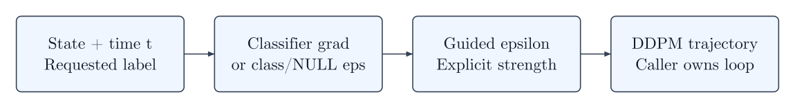
Check the guidance interpolation endpoints
Classifier-free guidance computes epsilon_null+w*(epsilon_class-epsilon_null). With null prediction .2 and conditional prediction .8, strengths 0,1,2 give .2,.8,1.4. Strength above one extrapolates; this arithmetic alone does not establish sample quality.
#include <dm/dm.hpp>
namespace n=dm::nn;namespace m=n::models;using T=n::Tensor;
int main(){std::filesystem::create_directories("build");
std::vector<T> out;for(int k=0;k<3;++k)out.push_back(m::ClassifierFreeEpsilon(n::full({1,2},.8),n::full({1,2},.2),n::scalar(k)));T left=n::from_vector(std::vector<float>{0,1,2},{3}),right=n::select(n::concat(out,0),1,0),extra=n::full({3},.8);
auto av=left.to_vector<double>(),bv=right.to_vector<double>(),cv=extra.to_vector<double>();
std::cout<<"| Strength | Mixed epsilon | Conditional epsilon |\n|---:|---:|---:|\n";
for(std::size_t i=0;i<av.size();++i)std::cout<<"|"<<av[i]<<"|"<<bv[i]<<"|"<<cv[i]<<"|\n";
n::save_npz("build/diffusion_guidance_worked.npz",{{"a",left},{"b",right},{"c",extra}});
dm::graphics::RPlot::create().points(n::arange(0,std::int64_t(bv.size())).to_vector<double>(),bv,"Native worked values",{37,99,235},4).x_label("Coordinate / probe index").y_label("Native computed value").title("Check the guidance interpolation endpoints").size(900,500).save_svg("build/diffusion_guidance_worked.svg");
}| Strength | Mixed epsilon | Conditional epsilon |
|---|---|---|
| 0 | 0.2 | 0.8 |
| 1 | 0.8 | 0.8 |
| 2 | 1.4 | 0.8 |
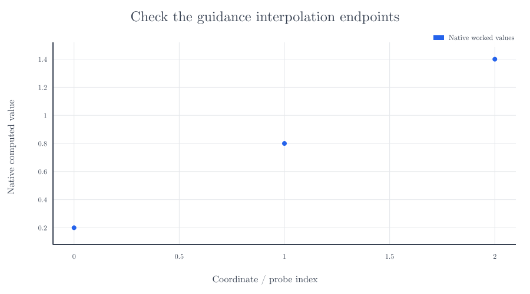
Trace the executed predictor
This graph comes from the actual native compact predictor with 5856 parameter values in six leaves. The input is the encoded feature vector; the experiment below shows its state, time and condition construction.
#include <dm/dm.hpp>
int main(){namespace n=dm::nn;namespace m=n::models;std::filesystem::create_directories("build");n::ParameterStore p(14007);m::InitializeDiffusionMlp(p,83,64);
n::Module model([&](const n::Tensor& encoded){auto path=m::DiffusionMlp(p,encoded);n::model_stage("Hidden1:32 SiLU",encoded,path.hidden1);n::model_stage("Hidden2:32 SiLU",path.hidden1,path.hidden2);return n::model_stage("Prediction:64 coordinates",path.hidden2,path.value);},"Executed compact predictor:5856 values / six leaves");
n::ModelPlotOptions options;options.detail=n::ModelPlotDetail::Blocks;options.sizing.minimum_extent=2;options.sizing.max_planes=2;auto figure=model.plot(n::zeros({1,83}),options);if(figure.parameter_count()!=5856||p.count()!=5856||p.size()!=6)throw std::runtime_error("Predictor census");figure.save_svg("build/diffusion_guidance_network.svg");
}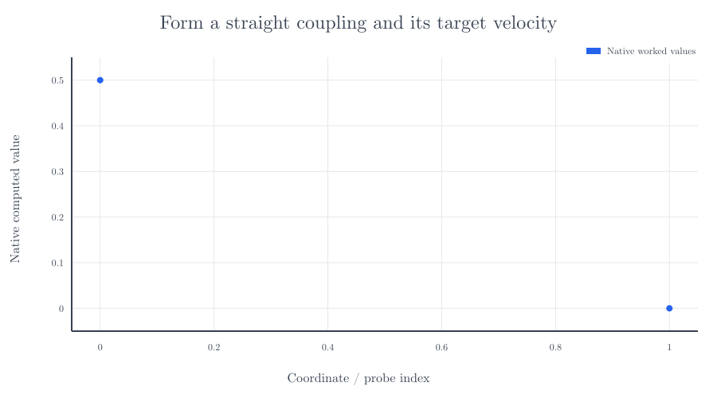
Complete preserved experiment
The following program is the editable experiment, including its held-out checks, source seeds, noise banks, checkpoint comparisons and complete fitting/sampling loops. Canonical C++ dataset preparation supplies MNIST; TensorFlow replay remains optional and is reported as skipped when its recordings are absent. Fixed-final outcomes and baseline shortfalls will be reported from execution.
#include <dm/dm.hpp>
// CMD: just run-nn diffusion_guidance
// Classifier and classifier-free guidance: two cheap trained conditioners plus a
// frozen unconditional DDPM.
//
// Port of tflow's diffusion_guidance (common/{nn,ml}/diffusion_guidance.h ->
// examples/nn/common/diffusion_guidance.hpp). Data: tflow's saliency MNIST pools
// (paths::Dataset("saliency")), continuous 8x8 [-1, 1] images, 32 cosine VP
// levels. Trains a noisy-image classifier (3722 parameters, CE on x_t and time,
// labels are targets only) and a conditional epsilon MLP (5856 parameters, 11-way
// one-hot input with NULL = 10, 10% independent label dropout, epsilon MSE),
// three epochs / 96 Adam(.003) steps each, tflow's BatchOrder(1000, 32, 14019).
// Frozen unconditional DDPM: ddpm=auto (our ddpm port's final.npz when present,
// else tflow's recorded model_arrays.npz; ddpm=ours|tf|DIR). Samples 10 classes x
// 4 common latents with CG and CFG at scales 0, 1, 3 (32 reverse steps each).
//
// Checks (as tflow): census, finite fields, restore bit-exact, classifier labels
// are not inputs (zero effect), CFG class changes epsilon, CG scale 0 equals the
// frozen DDPM step bit-exactly, CFG scale 1 equals the conditional epsilon
// (2e-6), zero guidance ignores class with paired latents, last step adds no
// noise, target-class effects, all weights immutable. TF parity: init=auto
// replays TF's classifier/ and conditional/ initial_arrays.npz and compares the
// records with TF's; TF's final weights must reproduce TF's test outputs.
// Deviations: final.npz checkpoints; no independent_audit.json. Options:
// epochs=3 data=DIR ddpm=auto|ours|tf|DIR out=DIR init=auto|tf|nn tf=DIR threads=4.
// Output: output/nn/models/diffusion_guidance.
// Report-local workflow adapters: diffusion_guidance.hpp
// Port of tflow's common/nn/diffusion_guidance.h and common/ml/diffusion_guidance.h:
// a noisy-image classifier (3722 parameters) and a NULL-dropout class-conditional
// epsilon MLP (5856 parameters, 11-way one-hot with NULL = 10), classifier
// guidance eps - w sqrt(1 - alpha_bar) grad_x log p(y | x_t, t) and
// classifier-free guidance eps_null + w (eps_class - eps_null), both feeding the
// clipped-x0 DDPM posterior update.
// Report-local workflow adapters: ddpm.hpp
// Shared support for the 3.4 diffusion ports: a port of tflow's common/nn/ddpm.h
// and common/ml/ddpm.h (cosine 32-level DDPM schedule, compact epsilon MLP,
// clipped-x0 ancestral reverse transition, DdpmModel) plus the program helpers
// that tflow repeats in ddpm/ddim/diffusion_guidance/conditional_diffusion
// (8x8 [-1, 1] MNIST pools, tflow's mt19937 Gaussian banks and timestep draws,
// 64x64-tile PNG sheets, trajectory sampling).
//
// tflow -> datamunge: graph/session models become classes over a
// nn::ParameterStore; AddSymbolicGradients -> nn::grad; the Adam train_op ->
// nn::Optimizer (Adam .003); SaveV2 "final" bundles -> final.npz. Parameter
// names match tflow's ("hidden1/W", ...), so TF's initial_arrays.npz /
// model_arrays.npz load directly (init=auto replays TF's run).
// Report-local workflow adapters: binary_pixels.hpp
// Shared harness of the binary 8x8 MNIST autoregressive density ports
// (pixel_cnn, gated_pixel_cnn, made_density, pixel_rnn): the program body that
// tflow repeats in each of those .cc files, plus the model-independent part of
// tflow's common/ml/{pixel_cnn,gated_pixel_cnn,made_density,pixel_rnn}.h
// (teacher-forced Bernoulli likelihood, causal logit/input Jacobian, prefix-only
// ancestral sampling with MT19937 uniforms).
//
// Data: the 1000/200/200 MNIST pools of tflow's saliency assets (ae::LoadSaliency),
// half-pixel bilinear 28 -> 8 in double then float32 threshold >= .5, as tflow.
//
// tflow -> datamunge: session graphs -> eager calls, AddSymbolicGradients ->
// nn::grad, Adam train_op -> nn::Optimizer (Adam .003), SaveV2 -> final.npz.
// TF parity: init=auto (default) replays TF's recorded initial_arrays.npz from
// tflow's output/models/<name>[/<variant>] so the whole run follows TF's; every
// record is then compared with TF's and the replayed first-step records must
// match. Independently of the trajectory, TF's FINAL weights (model_arrays.npz)
// are loaded into a fresh model which must reproduce TF's test outputs.
// Report-local workflow adapters: autoencoder.hpp
// Shared support for the autoencoder ports: a port of the parts of tflow's
// common/ml/{autoencoder,convolutional_autoencoder,variational_autoencoder,
// saliency}.h and common/nn/{convolutional_autoencoder,variational_autoencoder,
// smoothgrad}.h that convolutional_autoencoder and variational_autoencoder use.
//
// Data: the balanced 1000 fit / 200 validation / 200 test MNIST pools of
// $DATAMUNGE_DATA_DIR/saliency/saliency_data.npz (tflow's `just
// autoencoder-assets`). Checkpoints are .npz files of the parameter store
// instead of TF SaveV2 bundles. Parameter initialisation uses datamunge's
// generator, so trajectories match tflow only statistically; batch orders and
// Gaussian noise banks are bit-identical to tflow's.
// Report-local workflow adapters: checks.hpp
// Small runtime checks used by the executable nn examples. They stay on in
// Release builds and make the example exit nonzero on failure, so `just
// run-all-nn` doubles as a regression test against the recorded TF numbers.
// Report-local workflow adapters: runtime.hpp
// Bounded demonstrations by default; opt into convergence experiments explicitly.
namespace example_runtime {
inline bool Full() {
const char* value = std::getenv("DATAMUNGE_EXAMPLES_FULL");
return value && std::string(value) == "1";
}
template <typename T> T Limit(T requested, T quick_limit) {
return Full() ? requested : std::min(requested, quick_limit);
}
inline void Describe() {
if (!Full())
std::cout << "Quick demonstration: bounded training; convergence metrics require "
"DATAMUNGE_EXAMPLES_FULL=1.\n";
}
} // namespace example_runtime
namespace check {
inline void Require(bool condition, const std::string& message) {
if (!condition) throw std::runtime_error(message);
}
// A short demonstration checks execution, derivatives and persistence; reaching
// a published accuracy/return requires the separately requested full schedule.
inline void TrainingQuality(bool condition, const std::string& message) {
if (example_runtime::Full()) Require(condition, message);
else std::cout << " full-training quality check deferred: " << message << '\n';
}
inline void Near(double actual, double expected, double tolerance, const std::string& message) {
if (!std::isfinite(actual) || !std::isfinite(expected) || std::abs(actual - expected) > tolerance)
throw std::runtime_error(message + ": got " + std::to_string(actual) + ", expected " + std::to_string(expected));
}
/// Expects `f` to throw; returns the message.
template <typename F>
std::string Throws(F&& f, const std::string& message) {
try {
f();
} catch (const std::exception& e) {
return e.what();
}
throw std::runtime_error(message + ": expected an exception");
}
} // namespace check
inline void Header(const std::string& title) {
const std::size_t pad = title.size() < 60 ? 60 - title.size() : 0;
std::cout << "\n== " << title << " " << std::string(pad, '=') << "\n";
}
// Report-local workflow adapters: paths.hpp
// Where the nn example ports read datasets and write their outputs.
//
// Datasets: $DATAMUNGE_DATA_DIR, or the user's cache. Public datasets are
// prepared by the example data loaders when first needed.
// Outputs (checkpoints, histories, fixtures): $DATAMUNGE_OUTPUT_DIR, or
// output/nn relative to the working directory (`just run-nn` runs from the
// repository root). Both are created on demand by the caller.
// Report-local workflow adapters: dataset_assets.hpp
namespace dataset_assets {
inline std::string DataRoot(){return std::filesystem::absolute("build/datasets").string();}
inline void EnsureSaliency(const std::string& directory){dm::datasets::prepare_example_data("mnist-assets",std::filesystem::path(directory).parent_path().string());}
}
namespace paths {
inline std::filesystem::path DataRoot() {
return dataset_assets::DataRoot();
}
/// DataRoot() / name, e.g. Dataset("mnist").
inline std::filesystem::path Dataset(const std::string& name) { return DataRoot() / name; }
inline std::filesystem::path OutputRoot() {
if (const char* dir = std::getenv("DATAMUNGE_OUTPUT_DIR"); dir && *dir) return dir;
return example_runtime::Full() ? "build/diffusion-models" : "build/diffusion-models";
}
/// OutputRoot() / relative, created as a directory.
inline std::filesystem::path OutputDir(const std::string& relative) {
auto dir = OutputRoot() / relative;
std::filesystem::create_directories(dir);
return dir;
}
} // namespace paths
namespace ae {
namespace nn = datamunge::nn;
// ---- data ----------------------------------------------------------------------------
using SaliencyData=datamunge::nn::models::SaliencyData;
inline SaliencyData Rows(const SaliencyData& d, const std::vector<std::int64_t>& rows) {
return {nn::take_rows(d.images, rows), nn::take_rows(d.labels, rows), nn::take_rows(d.source, rows)};
}
inline nn::Tensor Find(const nn::NamedTensors& arrays, const std::string& name) {
for (const auto& [key, value] : arrays)
if (key == name) return value;
throw std::runtime_error("missing array " + name);
}
/// The fit, validation and test pools with tflow's integrity checks.
inline std::vector<SaliencyData> LoadSaliency(const std::filesystem::path&root){dataset_assets::EnsureSaliency(root.string());return nn::models::LoadSaliency(root);}
/// Copies tflow's provenance files next to the outputs when they exist.
inline void CopyManifests(const std::filesystem::path& data, const std::filesystem::path& root) {
const auto opts = std::filesystem::copy_options::overwrite_existing;
if (std::filesystem::exists(data / "manifest.json"))
std::filesystem::copy_file(data / "manifest.json", root / "data_manifest.json", opts);
const auto source = paths::Dataset("autoencoder") / "source_manifest.json";
if (std::filesystem::exists(source)) std::filesystem::copy_file(source, root / "source_manifest.json", opts);
}
// ---- tensor helpers --------------------------------------------------------------------
/// Raw bytes, for exact-equality checks (tflow's tensor_data() comparisons).
inline std::string Bytes(const nn::Tensor& t) {
const auto values = t.contiguous().to_vector<float>();
return std::string(reinterpret_cast<const char*>(values.data()), values.size() * sizeof(float));
}
inline double MaxAbsDiff(const nn::Tensor& a, const nn::Tensor& b, std::int64_t count) {
const auto x = a.contiguous().to_vector<float>(), y = b.contiguous().to_vector<float>();
double out = 0;
for (std::int64_t i = 0; i < count; ++i) out = std::max(out, std::abs(double(x[i]) - y[i]));
return out;
}
/// Mean squared error in double precision; the prediction must be finite in [0, 1].
inline double Mse(const nn::Tensor& prediction, const nn::Tensor& original) {
check::Require(prediction.numel() == original.numel(), "aligned reconstruction pixels");
const auto p = prediction.contiguous().to_vector<float>(), o = original.contiguous().to_vector<float>();
double sum = 0;
for (std::size_t i = 0; i < p.size(); ++i) {
const double x = p[i], y = o[i];
check::Require(std::isfinite(x) && x >= 0 && x <= 1, "finite bounded sigmoid reconstruction");
sum += (x - y) * (x - y);
}
return sum / double(p.size());
}
/// Per-pixel mean [784] of the fit images.
inline nn::Tensor PixelMean(const nn::Tensor& fit) {
const auto x = fit.contiguous().to_vector<float>();
const auto n = fit.size(0);
std::vector<float> out(784);
for (int i = 0; i < 784; ++i) {
double sum = 0;
for (std::int64_t b = 0; b < n; ++b) sum += x[b * 784 + i];
out[i] = float(sum / double(n));
}
return nn::from_vector(out, {784});
}
/// `mean` [784] repeated n times as [n, 784].
inline nn::Tensor Constant(const nn::Tensor& mean, std::int64_t n) {
return nn::tile(nn::reshape(mean, {1, 784}), {n, 1}).contiguous();
}
/// Values of every parameter (deep copies), in creation order.
inline nn::NamedTensors Arrays(const nn::ParameterStore& store) {
nn::NamedTensors out;
for (const auto& name : store.names()) out.emplace_back(name, store.at(name).detach().clone());
return out;
}
inline std::vector<std::string> Snapshot(const nn::ParameterStore& store) {
std::vector<std::string> out;
for (const auto& name : store.names()) out.push_back(Bytes(store.at(name)));
return out;
}
/// Checks every gradient is finite and every tensor gets a nonzero one; returns them named.
inline nn::NamedTensors CheckGradients(const nn::ParameterStore& store, const std::vector<nn::Tensor>& gradients,
const std::string& finite, const std::string& nonzero) {
nn::NamedTensors out;
check::Require(gradients.size() == store.size(), "one gradient per parameter");
for (std::size_t i = 0; i < gradients.size(); ++i) {
check::Require(gradients[i].defined(), nonzero);
double norm = 0;
for (float v : gradients[i].contiguous().to_vector<float>()) {
check::Require(std::isfinite(v), finite);
norm += double(v) * v;
}
check::Require(norm > 0, nonzero);
out.emplace_back(store.names()[i], gradients[i]);
}
return out;
}
// ---- figures ---------------------------------------------------------------------------
/// One row of 28x28 panels (each [784] or [28, 28, 1] values in [0, 1]) scaled 4x,
/// 4 px apart on gray 220 background, as tflow's digit<k>.png.
inline void PanelRow(const std::filesystem::path& path, const std::vector<nn::Tensor>& panels) {
std::vector<nn::Tensor> tiles;
for (const auto& p : panels) tiles.push_back(nn::reshape(p, {28, 28, 1}));
nn::save_image_grid(nn::stack(tiles, 0), path.string(), std::int64_t(tiles.size()), 0.0, 1.0, 4, 220.0 / 255.0,
4);
}
/// The b-th 784-pixel row of [n, 784] / [n, 28, 28, 1] probabilities.
inline nn::Tensor Row(const nn::Tensor& x, std::int64_t b) {
return nn::reshape(nn::slice_axis(x, 0, b, b + 1), {784});
}
// ---- convolutional autoencoder -------------------------------------------------------
struct ConvAeOutput {
nn::Tensor conv1, pool1, conv2, code, decoder1, reconstruction;
};
// Compatibility handles for independently maintained Python/R workflows.
// Model arithmetic is canonical in nn/autoencoder_models.hpp.
inline nn::Tensor ConvAeDecode(nn::ParameterStore& p, const nn::Tensor& code, nn::Tensor* decoder1 = nullptr) {
const auto result = nn::models::ConvolutionalDecoder(p, code);
if (decoder1) *decoder1 = result.hidden;
return result.reconstruction;
}
inline ConvAeOutput ConvolutionalAutoencoder(nn::ParameterStore& p, const nn::Tensor& image) {
const auto result = nn::models::ConvolutionalAutoencoder(p, image);
return {result.conv1, result.pool1, result.conv2, result.code, result.decoder1, result.reconstruction};
}
class ConvolutionalAutoencoderModel {
public:
nn::ParameterStore parameters{1801};
std::unique_ptr<nn::Optimizer> optimizer;
explicit ConvolutionalAutoencoderModel(bool training = true) {
{
nn::NoGradGuard guard;
ConvolutionalAutoencoder(parameters, nn::zeros({1, 28, 28, 1}));
}
if (training) {
nn::OptimizerConfig config;
config.kind = nn::OptimizerKind::Adam;
optimizer = std::make_unique<nn::Optimizer>(parameters, .003, config);
}
}
static nn::Tensor Loss(const nn::Tensor& reconstruction, const nn::Tensor& image) {
return nn::mean(nn::square(reconstruction - image));
}
/// {code, reconstruction, loss}
std::vector<nn::Tensor> Evaluate(const nn::Tensor& images) {
nn::NoGradGuard guard;
auto net = ConvolutionalAutoencoder(parameters, images);
return {net.code, net.reconstruction, Loss(net.reconstruction, images)};
}
std::vector<nn::Tensor> Activations(const nn::Tensor& images) {
nn::NoGradGuard guard;
auto n = ConvolutionalAutoencoder(parameters, images);
return {n.conv1, n.pool1, n.conv2, n.code, n.decoder1, n.reconstruction};
}
nn::Tensor Decode(const nn::Tensor& codes) {
nn::NoGradGuard guard;
return ConvAeDecode(parameters, codes);
}
};
// ---- variational autoencoder ---------------------------------------------------------
/// @brief Forward explicit diagonal-Gaussian sampling to the canonical core.
/// @param mu Finite nonempty Float32/64 means [B,L].
/// @param log_variance Finite matching log variances [B,L].
/// @param epsilon Finite matching explicit standard-normal noise [B,L].
/// @return Owning differentiable mu+exp(log_variance/2)*epsilon.
/// @throws std::invalid_argument For invalid shape, dtype or values.
/// @par Example
/// @code
/// #include <dm/dm.hpp>
/// namespace n=dm::nn;
/// const auto z=n::models::GaussianReparameterize(n::ones({1,2}),n::zeros({1,2}),n::zeros({1,2}));
/// // Canonical equivalent: z is [1,1], with no posterior RNG draw.
/// @endcode
/// @see datamunge::nn::models::GaussianReparameterize()
inline nn::Tensor VaeReparameterize(const nn::Tensor& mu, const nn::Tensor& log_variance, const nn::Tensor& epsilon) {
return nn::models::GaussianReparameterize(mu, log_variance, epsilon);
}
/// @brief Forward coordinate-summed standard-normal KL to the canonical core.
/// @param mu Finite nonempty Float32/64 means [B,L].
/// @param log_variance Finite matching log variances [B,L].
/// @return Owning differentiable per-row KL [B], without clipping roundoff.
/// @throws std::invalid_argument For invalid shape, dtype or values.
/// @par Example
/// @code
/// #include <dm/dm.hpp>
/// namespace n=dm::nn;
/// const auto kl=n::models::DiagonalGaussianKl(n::ones({2,3}),n::zeros({2,3}));
/// // Canonical equivalent: each coordinate-summed KL is1.5.
/// @endcode
/// @see datamunge::nn::models::DiagonalGaussianKl()
inline nn::Tensor VaeKl(const nn::Tensor& mu, const nn::Tensor& log_variance) {
return nn::models::DiagonalGaussianKl(mu, log_variance);
}
/// @brief Forward stable pixel-summed Bernoulli cross-entropy to the canonical core.
/// @param logits Finite nonempty Float32/64 log-odds [B,F].
/// @param target Finite matching unit-range targets [B,F].
/// @return Owning differentiable per-row summed NLL [B], without sigmoid clipping.
/// @throws std::invalid_argument For invalid shape, dtype or values.
/// @par Example
/// @code
/// #include <dm/dm.hpp>
/// namespace n=dm::nn;
/// const auto nll=n::models::BernoulliPixelNll(n::zeros({2,3}),n::zeros({2,3}));
/// // Canonical equivalent: each row is3*log(2), not a pixel mean.
/// @endcode
/// @see datamunge::nn::models::BernoulliPixelNll()
inline nn::Tensor VaePixelNll(const nn::Tensor& logits, const nn::Tensor& target) {
return nn::models::BernoulliPixelNll(logits, target);
}
struct VaeOutput {
nn::Tensor mu, log_variance, z, logits, probability, reconstruction_nll, kl, loss;
};
/// @brief Forward the original two-code/ReLU64 decoder to the canonical core.
/// @param p Mutable matching floating parameter store; decoder/output names are retained.
/// @param z Finite nonempty Float32/64 codes [B,2].
/// @return Owning differentiable Bernoulli logits [B,784], without an image input.
/// @throws std::invalid_argument For invalid code/dtype or incompatible leaves.
/// @par Example
/// @code
/// #include <dm/dm.hpp>
/// namespace n=dm::nn;
/// n::ParameterStore p(1951);
/// const auto logits=n::models::GaussianVaeDecode(p,n::zeros({2,2}),784,2,64);
/// // Canonical equivalent: [2,784] logits from four decoder leaves.
/// @endcode
/// @see datamunge::nn::models::GaussianVaeDecode()
inline nn::Tensor VaeDecodeLogits(nn::ParameterStore& p, const nn::Tensor& z) {
return nn::models::GaussianVaeDecode(p, z, 784, 2, 64);
}
/// @brief Forward the original ReLU64/two-coordinate VAE to native beta=1 inference.
///
/// This compatibility record retains the original eight fields and ten-leaf
/// creation order; canonical GaussianVaeOutput also exposes unweighted_loss.
/// No fitting, posterior noise draws or mode changes are hidden by this adapter.
/// @param p Mutable matching floating parameter store; original names are retained.
/// @param image Finite nonempty unit-range Float32/64 [B,784] pixels.
/// @param epsilon Finite matching explicit Gaussian noise [B,2].
/// @return Owning original eight-field result; loss averages pixel-summed NLL plus latent-summed KL over images.
/// @throws std::invalid_argument For invalid inputs/dtypes or incompatible leaves.
/// @par Example
/// @code
/// #include <dm/dm.hpp>
/// namespace n=dm::nn;
/// n::ParameterStore p(1951);
/// const auto out=n::models::BetaVariationalAutoencoder(p,n::zeros({2,784}),n::zeros({2,2}),1,784,2,64);
/// // Canonical equivalent: beta1, latent2, hidden64, ten leaves/101652 scalars.
/// @endcode
/// @see datamunge::nn::models::BetaVariationalAutoencoder()
inline VaeOutput VariationalAutoencoder(nn::ParameterStore& p, const nn::Tensor& image, const nn::Tensor& epsilon) {
const auto out = nn::models::BetaVariationalAutoencoder(p, image, epsilon, 1, 784, 2, 64);
return {out.mu, out.log_variance, out.z, out.logits, out.probability,
out.reconstruction_nll, out.kl, out.loss};
}
class VariationalAutoencoderModel {
public:
nn::ParameterStore parameters{1951};
std::unique_ptr<nn::Optimizer> optimizer;
explicit VariationalAutoencoderModel(bool training = true) {
{
nn::NoGradGuard guard;
VariationalAutoencoder(parameters, nn::zeros({1, 784}), nn::zeros({1, 2}));
}
if (training) {
nn::OptimizerConfig config;
config.kind = nn::OptimizerKind::Adam;
optimizer = std::make_unique<nn::Optimizer>(parameters, .003, config);
}
}
static nn::Tensor Flatten(const nn::Tensor& images) { return nn::reshape(images, {images.size(0), 784}); }
/// {mu, log_variance, z, probability, reconstruction_nll, kl, loss}, all checked finite.
std::vector<nn::Tensor> Evaluate(const nn::Tensor& images, const nn::Tensor& noise) {
nn::NoGradGuard guard;
auto n = VariationalAutoencoder(parameters, Flatten(images), noise);
std::vector<nn::Tensor> out{n.mu, n.log_variance, n.z, n.probability, n.reconstruction_nll, n.kl, n.loss};
for (auto& t : out) {
t = t.contiguous();
for (float v : t.to_vector<float>()) check::Require(std::isfinite(v), "ALL posterior/output/objective values finite");
}
return out;
}
nn::Tensor Decode(const nn::Tensor& codes) {
nn::NoGradGuard guard;
return nn::sigmoid(VaeDecodeLogits(parameters, codes));
}
std::vector<nn::Tensor> Gradient(const nn::Tensor& images, const nn::Tensor& noise) {
return nn::grad(VariationalAutoencoder(parameters, Flatten(images), noise).loss, parameters.parameters());
}
/// One Adam step; returns the pre-update negative ELBO.
double Update(const nn::Tensor& images, const nn::Tensor& noise) {
auto loss = VariationalAutoencoder(parameters, Flatten(images), noise).loss;
const double value = loss.item<float>();
check::Require(std::isfinite(value) && value >= 0, "finite negativeELBO");
optimizer->minimize(loss);
return value;
}
};
/// tflow's nn::GaussianNoise: Box-Muller pairs from std::mt19937(seed), as
/// float64 [samples, shape...].
inline nn::Tensor GaussianNoise(const nn::Shape& shape, std::int64_t samples, std::uint32_t seed) {
return nn::models::GaussianNoise(shape, samples, seed);
}
struct VaeNoiseBank {
nn::Tensor standard, epsilon; // float64 / float32 [samples, n, 2]
};
inline VaeNoiseBank VaeNoise(std::int64_t n, std::int64_t samples, std::uint32_t seed) {
auto standard = GaussianNoise({n, 2}, samples, seed);
return {standard, nn::cast(standard, nn::DType::Float32).contiguous()};
}
inline nn::Tensor VaeNoiseAt(const VaeNoiseBank& bank, std::int64_t k) {
return nn::select(bank.epsilon, 0, k).contiguous();
}
/// Monte Carlo {reconstruction NLL, KL, negative ELBO} per image over every sample of `bank`.
inline std::vector<double> VaeScore(VariationalAutoencoderModel& model, const nn::Tensor& images,
const VaeNoiseBank& bank) {
double reconstruction = 0, kl = 0;
const std::int64_t n = images.size(0), samples = bank.epsilon.size(0);
for (std::int64_t k = 0; k < samples; ++k) {
auto out = model.Evaluate(images, VaeNoiseAt(bank, k));
const auto nll = out[4].to_vector<float>(), kls = out[5].to_vector<float>();
for (std::int64_t b = 0; b < n; ++b) {
reconstruction += nll[b];
if (k == 0) kl += kls[b];
}
}
reconstruction /= double(n * samples);
kl /= double(n);
return {reconstruction, kl, reconstruction + kl};
}
// ---- dense undercomplete autoencoder (tflow's common/nn/autoencoder.h + ml/autoencoder.h) ----
/// [n, 28, 28, 1] (or any n x 784 values) as [n, 784] original pixels.
inline nn::Tensor Flatten(const nn::Tensor& images) { return nn::reshape(images, {images.size(0), 784}); }
// Preserve the SWIG-visible value type and function while the canonical model
// lives in the library. Existing Python/R examples keep the same interface.
struct DenseAeOutput {
nn::Tensor code, reconstruction;
};
inline DenseAeOutput UndercompleteAutoencoder(nn::ParameterStore& p, const nn::Tensor& input,
std::int64_t features = 784, std::int64_t latent = 32) {
const auto result = nn::models::UndercompleteAutoencoder(p, input, features, latent);
return {result.code, result.reconstruction};
}
/// tflow's ReconstructionMse: mean over every element.
inline nn::Tensor ReconstructionMse(const nn::Tensor& prediction, const nn::Tensor& original) {
return nn::mean(nn::square(prediction - original));
}
/// Adam(.003), the optimiser of every short autoencoder example.
inline std::unique_ptr<nn::Optimizer> MakeAdam(nn::ParameterStore& store, double learning_rate = .003) {
nn::OptimizerConfig config;
config.kind = nn::OptimizerKind::Adam;
return std::make_unique<nn::Optimizer>(store, learning_rate, config);
}
/// tflow's CorruptForDenoising: clamp(float(x + sigma z), 0, 1) with z one float64 bank [1, shape...].
inline nn::Tensor CorruptForDenoising(const nn::Tensor& clean, const nn::Tensor& standard_noise, float sigma) {
return nn::models::CorruptForDenoising(clean, standard_noise, sigma);
}
/// tflow's data.npz record: the three pools (+ any extra arrays).
inline void SaveData(const std::filesystem::path& file, const std::vector<SaliencyData>& pools,
const nn::NamedTensors& extra = {}) {
nn::NamedTensors arrays{{"fit_images", pools[0].images}, {"validation_images", pools[1].images},
{"test_images", pools[2].images}, {"fit_source_ids", pools[0].source},
{"validation_source_ids", pools[1].source}, {"test_source_ids", pools[2].source},
{"test_labels", pools[2].labels}};
arrays.insert(arrays.end(), extra.begin(), extra.end());
nn::save_npz(file.string(), arrays);
}
/// Index of the first record of `digit` in a label vector (gallery rows).
inline int FirstOfDigit(const nn::Tensor& labels, int digit) {
const auto l = labels.contiguous().to_vector<int>();
for (std::size_t b = 0; b < l.size(); ++b)
if (l[b] == digit) return int(b);
throw std::runtime_error("no record of digit " + std::to_string(digit));
}
/// Writes digit<k>.png (one panel row per digit: the b-th row of every tensor) and its html sections.
inline void DigitGallery(const std::filesystem::path& root, const SaliencyData& test,
const std::vector<nn::Tensor>& panels, std::ostream& html) {
const auto source = test.source.contiguous().to_vector<int>();
for (int digit = 0; digit < 10; ++digit) {
const int b = FirstOfDigit(test.labels, digit);
std::vector<nn::Tensor> row;
for (const auto& t : panels) row.push_back(Row(t, b));
const std::string file = "digit" + std::to_string(digit) + ".png";
PanelRow(root / file, row);
html << "<section><h2>Digit" << digit << ",source" << source[b] << "</h2><img src='" << file << "'></section>";
}
}
/// Byte-identical parameter stores (matched-initialisation checks).
inline bool SameArrays(const nn::ParameterStore& a, const nn::ParameterStore& b) {
if (a.names() != b.names()) return false;
for (const auto& name : a.names())
if (Bytes(a.at(name)) != Bytes(b.at(name))) return false;
return true;
}
// ---- 2.3 applications: frozen checkpoints and case figures ------------------------------
/// tflow's ml::UndercompleteModel (784->32 ReLU->784 sigmoid, seed 1471) for the frozen
/// applications; the training port keeps its own copy in undercomplete_autoencoder.cpp.
class UndercompleteModel {
public:
nn::ParameterStore parameters{1471};
std::unique_ptr<nn::Optimizer> optimizer;
explicit UndercompleteModel(bool training = true) {
{
nn::NoGradGuard guard;
UndercompleteAutoencoder(parameters, nn::zeros({1, 784}));
}
if (training) optimizer = MakeAdam(parameters);
}
/// {code, reconstruction, loss}
std::vector<nn::Tensor> Evaluate(const nn::Tensor& images) {
nn::NoGradGuard guard;
auto x = Flatten(images);
auto n = UndercompleteAutoencoder(parameters, x);
return {n.code, n.reconstruction, ReconstructionMse(n.reconstruction, x)};
}
nn::Tensor Decode(const nn::Tensor& codes) {
nn::NoGradGuard guard;
return nn::dense(parameters, "decoder", codes, 784, nn::Activation::Sigmoid);
}
};
/// Restores a frozen checkpoint directory written by a training port (best.npz) or by
/// tflow (model_arrays.npz = its restored best checkpoint); returns the file used.
inline std::filesystem::path LoadFrozen(nn::ParameterStore& store, const std::filesystem::path& directory,
const std::string& what) {
for (const char* name : {"best.npz", "model_arrays.npz"}) {
const auto file = directory / name;
if (std::filesystem::exists(file)) {
store.load(file.string());
return file;
}
}
check::Require(false, what + ": no best.npz/model_arrays.npz in " + directory.string() + " (run the training port first)");
return {};
}
/// One case strip as tflow's case_<k>.png: the b-th 784-pixel row of every tensor, 3x nearest,
/// 4 px apart on gray 220 (84 x (88 n - 4) RGB).
inline void CaseStrip3(const std::filesystem::path& path, const std::vector<nn::Tensor>& panels, std::int64_t b) {
std::vector<nn::Tensor> tiles;
for (const auto& p : panels) tiles.push_back(nn::reshape(Row(p, b), {28, 28, 1}));
nn::save_image_grid(nn::tile(nn::stack(tiles, 0), {1, 1, 1, 3}), path.string(), std::int64_t(tiles.size()), 0.0, 1.0,
4, 220.0 / 255.0, 3);
}
/// tflow's latent-application Mosaic: [n, 784] rows, `columns` per row, 3x nearest, 4 px gray 220 gaps.
inline void Mosaic3(const std::filesystem::path& path, const nn::Tensor& values, std::int64_t columns) {
const auto n = values.size(0);
nn::save_image_grid(nn::tile(nn::reshape(values, {n, 28, 28, 1}), {1, 1, 1, 3}), path.string(), columns, 0.0, 1.0, 4,
220.0 / 255.0, 3);
}
} // namespace ae
// Report-local workflow adapters: tf_replay.hpp
// Small helpers the 4.2 sequence-task ports share for working with tflow's
// recorded runs: named-array maps (tflow's `std::map<std::string, tf::Tensor>`
// batches), row selection, exact/approximate comparisons, loading TF's
// initial_arrays.npz into a ParameterStore and reading history.tsv columns.
//
// A tflow run directory (tflow's output/models/<name>) holds initial_arrays.npz,
// first_batch.npz, initial_gradients.npz, history.tsv and model_arrays.npz.
// Replaying the run from TF's own initial weights with the same batch order
// (nn::BatchOrder reproduces tflow's) and the same optimizer checks the port
// numerically, independently of the random initialisation.
namespace replay {
namespace nn = datamunge::nn;
using nn::Tensor;
using Map = std::map<std::string, Tensor>;
/// tflow's recorded output directory for an example (its output/models/<name>).
inline std::filesystem::path TfModels(const std::string& name) {
return paths::DataRoot().parent_path() / "models" / name;
}
inline Tensor Get(const nn::NamedTensors& arrays, const std::string& key) {
for (const auto& [name, t] : arrays)
if (name == key) return t;
throw std::runtime_error("missing array " + key);
}
inline Map ToMap(const nn::NamedTensors& arrays) { return {arrays.begin(), arrays.end()}; }
inline nn::NamedTensors ToNamed(const Map& m) { return {m.begin(), m.end()}; }
/// Rows `rows` (axis 0) of every array.
inline Map Rows(const Map& m, const std::vector<std::int64_t>& rows) {
Map out;
for (const auto& [k, v] : m) out[k] = nn::take_rows(v, rows);
return out;
}
/// {key: arrays["<split>_<key>"]} for each key.
inline Map Split(const nn::NamedTensors& arrays, const std::string& split, const std::vector<std::string>& keys) {
Map out;
for (const auto& k : keys) out[k] = Get(arrays, split + "_" + k);
return out;
}
inline double MaxAbsDiff(const Tensor& a, const Tensor& b) {
const auto x = a.to_vector<double>(), y = b.to_vector<double>();
check::Require(x.size() == y.size(), "compared tensors have the same size");
double m = 0;
for (std::size_t i = 0; i < x.size(); ++i) m = std::max(m, std::abs(x[i] - y[i]));
return m;
}
/// Bit-identical values (dtype and shape included).
inline bool SameBits(const Tensor& a, const Tensor& b) {
if (a.dtype() != b.dtype() || a.shape() != b.shape()) return false;
auto same = [](const auto& x, const auto& y) {
return x.size() == y.size() && (x.empty() || std::memcmp(x.data(), y.data(), x.size() * sizeof(x[0])) == 0);
};
switch (a.dtype()) {
case nn::DType::Float32: return same(a.to_vector<float>(), b.to_vector<float>());
case nn::DType::Float64: return same(a.to_vector<double>(), b.to_vector<double>());
case nn::DType::Int32: return same(a.to_vector<std::int32_t>(), b.to_vector<std::int32_t>());
default: return same(a.to_vector<std::int64_t>(), b.to_vector<std::int64_t>());
}
}
inline bool SameBits(const Map& a, const Map& b) {
if (a.size() != b.size()) return false;
for (const auto& [k, v] : a)
if (!b.count(k) || !SameBits(v, b.at(k))) return false;
return true;
}
/// Copies of every parameter, by name.
inline Map Arrays(const nn::ParameterStore& p) {
Map out;
for (const auto& name : p.names()) out[name] = p.at(name).detach().clone();
return out;
}
/// Gradients aligned with p.names(), by name.
inline Map Named(const nn::ParameterStore& p, const std::vector<Tensor>& g) {
Map out;
for (std::size_t i = 0; i < g.size(); ++i) out[p.names()[i]] = g[i].defined() ? g[i].detach() : nn::zeros_like(p.parameters()[i]).detach();
return out;
}
/// Overwrites every parameter of `p` from an .npz (e.g. TF's initial_arrays.npz),
/// which must hold exactly p's names.
inline void LoadInto(nn::ParameterStore& p, const std::filesystem::path& file) {
const auto arrays = nn::load_npz(file.string());
check::Require(arrays.size() == p.size(), "array file covers exactly the model's parameters: " + file.string());
for (const auto& [name, value] : arrays) {
check::Require(p.contains(name), "array " + name + " is a model parameter");
p.set(name, nn::cast(value, p.at(name).dtype()));
}
}
/// max |a[k] - b[k]| over the keys of `a` (all must exist in `b`).
inline double MaxDiff(const Map& a, const Map& b) {
double m = 0;
for (const auto& [k, v] : a) {
check::Require(b.count(k) > 0, "reference has array " + k);
m = std::max(m, MaxAbsDiff(v, b.at(k)));
}
return m;
}
inline double MaxDiff(const Map& a, const std::filesystem::path& file) { return MaxDiff(a, ToMap(nn::load_npz(file.string()))); }
/// Column `column` (0-based) of a tab-separated history file with a header line.
inline std::vector<double> History(const std::filesystem::path& file, int column = 1) {
std::ifstream in(file);
std::string line;
std::vector<double> out;
std::getline(in, line);
while (std::getline(in, line)) {
std::stringstream ss(line);
std::string cell;
for (int c = 0; c <= column && std::getline(ss, cell, '\t'); ++c)
if (c == column) out.push_back(std::stod(cell));
}
return out;
}
inline nn::OptimizerConfig Adam() {
nn::OptimizerConfig c;
c.kind = nn::OptimizerKind::Adam;
return c;
}
/// Copies `files` from `from` to `to` when present.
inline void CopyAssets(const std::filesystem::path& from, const std::filesystem::path& to,
const std::vector<std::string>& files) {
for (const auto& f : files)
if (std::filesystem::exists(from / f))
std::filesystem::copy_file(from / f, to / f, std::filesystem::copy_options::overwrite_existing);
}
} // namespace replay
namespace bpix {
namespace nn = datamunge::nn;
namespace fs = std::filesystem;
using nn::Tensor;
using Map = replay::Map;
// ---- small helpers -----------------------------------------------------------------------------
inline Tensor Floats(const std::vector<float>& v, const nn::Shape& s) {
return nn::from_vector(v, s);
}
/// tflow's Png: every 8x8 image as a 64x64 tile (8x nearest), `columns` per row,
/// gray 220 background, floor(v * 255 + .5); `rgb` images use (v + 1) * 127.5
/// with clamping when `signed_range`, else 255 clamp(v, 0, 1).
inline void Png(const fs::path& path, const Tensor& images, int columns, int mode = 0) {
const auto n = images.size(0), c = images.size(3);
const auto v = images.contiguous().to_vector<float>();
const std::int64_t rows = (n + columns - 1) / columns, H = rows * 64, W = columns * 64;
std::vector<float> out(static_cast<std::size_t>(H * W * 3), 220.f);
for (std::int64_t b = 0; b < n; ++b)
for (int y = 0; y < 64; ++y)
for (int x = 0; x < 64; ++x)
for (int k = 0; k < 3; ++k) {
const double value =
v[static_cast<std::size_t>(((b * 8 + y / 8) * 8 + x / 8) * c + (c == 1 ? 0 : k))];
double byte = mode == 0 ? std::floor(value * 255 + .5)
: mode == 1 ? std::floor(std::clamp((value + 1) * 127.5, 0., 255.) + .5)
: std::floor(255 * std::clamp(value, 0., 1.) + .5);
out[static_cast<std::size_t>(
((b / columns * 64 + y) * W + b % columns * 64 + x) * 3 + k)] = float(byte);
}
nn::save_png(Floats(out, {H, W, 3}), path.string(), 0, 255);
}
/// Writes a [H, W, 3] uint8-valued byte image.
inline void
PngBytes(const fs::path& path, const std::vector<float>& bytes, std::int64_t h, std::int64_t w) {
nn::save_png(Floats(bytes, {h, w, 3}), path.string(), 0, 255);
}
inline void RequireFinite(const Map& m, const std::string& what) {
for (const auto& [k, v] : m)
if (v.dtype() == nn::DType::Float32)
for (float x : v.contiguous().to_vector<float>())
check::Require(std::isfinite(x), what);
}
inline std::string Bits(const Tensor& t) {
const auto c = t.contiguous();
switch (c.dtype()) {
case nn::DType::Float32: {
const auto v = c.to_vector<float>();
return {reinterpret_cast<const char*>(v.data()), v.size() * sizeof(float)};
}
case nn::DType::Float64: {
const auto v = c.to_vector<double>();
return {reinterpret_cast<const char*>(v.data()), v.size() * sizeof(double)};
}
default: {
const auto v = c.to_vector<std::int32_t>();
return {reinterpret_cast<const char*>(v.data()), v.size() * sizeof(std::int32_t)};
}
}
}
inline bool SameBits(const Map& a, const Map& b) {
if (a.size() != b.size())
return false;
for (const auto& [k, v] : a)
if (!b.count(k) || Bits(v) != Bits(b.at(k)) || v.shape() != b.at(k).shape())
return false;
return true;
}
// ---- options ----------------------------------------------------------------------------------
struct Options {
int epochs = 3, threads = 4;
fs::path data = paths::Dataset("saliency"), out, tf;
std::string init = "auto";
bool verbose = false;
};
/// epochs=N data=DIR out=DIR init=auto|tf|nn|PATH tf=DIR threads=N verbose=0|1
inline Options ParseOptions(int argc, char** argv, const std::string& name, const fs::path& data) {
Options o;
o.data = data;
o.tf = replay::TfModels(name);
for (int i = 1; i < argc; ++i) {
const std::string a = argv[i];
const auto e = a.find('=');
check::Require(
e != std::string::npos,
"expected key=value (epochs= data= out= init= tf= threads= verbose=)");
const std::string k = a.substr(0, e), v = a.substr(e + 1);
if (k == "epochs")
o.epochs = std::stoi(v);
else if (k == "data")
o.data = v;
else if (k == "out")
o.out = v;
else if (k == "init")
o.init = v;
else if (k == "tf")
o.tf = v;
else if (k == "threads")
o.threads = std::stoi(v);
else if (k == "verbose")
o.verbose = v != "0";
else
throw std::invalid_argument(
"epochs=N data=PATH out=PATH init=auto|tf|nn|PATH tf=DIR threads=N verbose=0|1");
}
check::Require(
o.epochs > 0 && o.epochs <= 100, "three cheap default epochs or explicit 1..100 override");
if (o.out.empty())
o.out = paths::OutputRoot() / "models" / name;
fs::create_directories(o.out);
if (o.threads > 0)
nn::set_num_threads(o.threads);
return o;
}
/// The initial arrays to replay (empty: nn's generator). `tf` is the TF run directory.
inline fs::path InitFile(const std::string& init, const fs::path& tf) {
if (init == "nn")
return {};
if (init == "auto" || init == "tf") {
const auto f = tf / "initial_arrays.npz";
if (init == "tf")
check::Require(fs::exists(f), "init=tf needs " + f.string());
return fs::exists(f) ? f : fs::path();
}
check::Require(fs::exists(init), "init file " + init + " missing");
return init;
}
/// Max |ours - TF| over the arrays both records share (-1 when TF's file is missing);
/// `relative`: max |ours - TF| / (1 + |TF|).
inline double Compare(
const fs::path& tf,
const std::string& file,
const Map& ours,
bool verbose = false,
bool relative = false) {
if (!fs::exists(tf / file)) {
std::printf(" vs TF %-28s (no TF record)\n", file.c_str());
return -1;
}
const auto theirs = replay::ToMap(nn::load_npz((tf / file).string()));
double m = 0;
int shared = 0;
for (const auto& [k, v] : ours) {
if (!theirs.count(k) || theirs.at(k).numel() != v.numel())
continue;
const auto x = nn::cast(v, nn::DType::Float64).to_vector<double>(),
y = nn::cast(theirs.at(k), nn::DType::Float64).to_vector<double>();
double d = 0;
for (std::size_t i = 0; i < x.size(); ++i)
d = std::max(d, std::abs(x[i] - y[i]) / (relative ? 1 + std::abs(y[i]) : 1.));
if (verbose)
std::printf(" %-24s %.3g\n", k.c_str(), d);
m = std::max(m, d);
++shared;
}
std::printf(
" vs TF %-28s max |ours - TF|%s = %.3g (%d arrays)\n",
file.c_str(),
relative ? "/(1+|TF|)" : "",
m,
shared);
return m;
}
/// Fraction of equal elements of `key` in ours vs TF's record.
inline double
Agreement(const fs::path& tf, const std::string& file, const Map& ours, const std::string& key) {
if (!fs::exists(tf / file))
return -1;
const auto theirs = replay::ToMap(nn::load_npz((tf / file).string()));
if (!theirs.count(key))
return -1;
const auto a = nn::cast(ours.at(key), nn::DType::Float64).to_vector<double>();
const auto b = nn::cast(theirs.at(key), nn::DType::Float64).to_vector<double>();
if (a.size() != b.size())
return -1;
std::size_t same = 0;
for (std::size_t i = 0; i < a.size(); ++i)
same += a[i] == b[i];
return double(same) / double(a.size());
}
// ---- data -------------------------------------------------------------------------------------
/// tflow's half-pixel bilinear 28 -> 8 resize (double accumulation, float result).
inline Tensor Resize8(const Tensor& images) {
return nn::models::BigGanResize8(images);
}
struct BinaryData {
std::vector<ae::SaliencyData> pools;
std::vector<Tensor> gray, binary; // [n, 8, 8, 1] float
Map record; // tflow's data.npz
};
inline BinaryData LoadBinary(const fs::path& data) {
BinaryData d;
d.pools = ae::LoadSaliency(data);
for (int k = 0; k < 3; ++k) {
const std::string split = k == 0 ? "fit" : k == 1 ? "validation" : "test";
auto gray = Resize8(d.pools[k].images);
auto g = gray.to_vector<float>();
for (auto& v : g)
v = v >= .5f ? 1.f : 0.f;
auto x = Floats(g, gray.shape());
d.gray.push_back(gray);
d.binary.push_back(x);
d.record[split + "_original"] = d.pools[k].images;
d.record[split + "_gray"] = gray;
d.record[split + "_images"] = x;
d.record[split + "_labels"] = d.pools[k].labels;
d.record[split + "_source_ids"] = d.pools[k].source;
}
return d;
}
inline Tensor Rows(const Tensor& x, const std::vector<std::int64_t>& rows) {
return nn::take_rows(x, rows);
}
// ---- model base -------------------------------------------------------------------------------
/// A binary-pixel autoregressive density: Network() returns the model's named
/// fields with the logits [N, 8, 8, 1] first. `order(j)` is the generation
/// ordinal of pixel j (raster, or reversed for MADE's reverse model).
class BinaryModel {
public:
nn::ParameterStore store;
std::unique_ptr<nn::Optimizer> optimizer;
bool reverse = false, uses_classes = false;
explicit BinaryModel(std::uint64_t seed) : store(seed) {}
virtual ~BinaryModel() = default;
BinaryModel(const BinaryModel&) = delete;
BinaryModel& operator=(const BinaryModel&) = delete;
virtual std::vector<std::pair<std::string, Tensor>> Network(
const Tensor& x,
const Tensor& classes) = 0;
/// Builds every parameter once (call from the derived constructor) and Adam(.003) when training.
void Build(bool training) {
{
nn::NoGradGuard guard;
Network(nn::zeros({1, 8, 8, 1}), nn::zeros({1}, nn::DType::Int32));
}
if (training)
optimizer = std::make_unique<nn::Optimizer>(store, .003, replay::Adam());
}
int Order(int j) const { return reverse ? 63 - j : j; }
void Validate(const Tensor& x, const Tensor& classes) const {
if (!uses_classes)
return;
check::Require(
classes.defined() && classes.dim() == 1 && classes.size(0) == x.size(0),
"aligned class conditioning");
for (int c : nn::cast(classes, nn::DType::Int32).to_vector<int>())
check::Require(c >= 0 && c < 10, "valid 0..9 class conditions");
}
static Tensor PixelNll(const Tensor& logits, const Tensor& x) {
return nn::sub(nn::softplus(logits), nn::mul(x, logits));
}
Map Evaluate(const Tensor& x, const Tensor& classes = {}) {
Validate(x, classes);
nn::NoGradGuard guard;
auto fields = Network(x, classes);
const Tensor logits = fields[0].second, nll = PixelNll(logits, x);
Map out;
out["logits"] = logits;
out["probability"] = nn::sigmoid(logits);
for (std::size_t i = 1; i < fields.size(); ++i)
out[fields[i].first] = fields[i].second;
out["per_image_nll"] = nn::sum(nll, {1, 2, 3});
out["loss"] = nn::mean(nll);
for (auto& [k, v] : out)
v = v.detach().contiguous();
RequireFinite(out, "finite model fields");
return out;
}
Tensor Probability(const Tensor& x, const Tensor& classes = {}) {
Validate(x, classes);
nn::NoGradGuard guard;
return nn::sigmoid(Network(x, classes)[0].second).contiguous();
}
/// d sum_b logits[b, site] / d image.
Tensor CausalGradient(const Tensor& x, const Tensor& classes, int site) {
check::Require(site >= 0 && site < 64, "valid pixel index");
Validate(x, classes);
Tensor input = x.detach().clone();
input.requires_grad_(true);
const Tensor logits = nn::reshape(Network(input, classes)[0].second, {-1, 64});
return nn::grad(nn::sum(nn::slice_axis(logits, 1, site, site + 1)), {input})[0]
.detach()
.contiguous();
}
Map Arrays() const { return replay::Arrays(store); }
/// tflow's Sample: n images drawn pixel by pixel in model order from an
/// all-zero canvas (the first `prefix_size` ordinals copied from `prefix`),
/// u = (mt19937() + .5) / 2^32 bank [n, 64] in ordinal order; `common_four`
/// shares the first four rows' uniforms across groups of four.
Map Sample(
int n,
std::uint32_t seed,
const Tensor& classes = {},
const Tensor* prefix = nullptr,
int prefix_size = 0,
bool common_four = false) {
check::Require(
n > 0 && prefix_size >= 0 && prefix_size <= 64, "valid ancestral sample count/prefix");
std::vector<float> images(static_cast<std::size_t>(n * 64), 0.f),
conditionals(static_cast<std::size_t>(n * 64), 0.f);
std::vector<double> uniform(static_cast<std::size_t>(n * 64));
std::mt19937 rng(seed);
for (auto& u : uniform)
u = (double(rng()) + .5) / 4294967296.;
if (common_four) {
check::Require(n % 4 == 0, "common-four-noise group");
for (int b = 4; b < n; ++b)
for (int j = 0; j < 64; ++j)
uniform[b * 64 + j] = uniform[(b % 4) * 64 + j];
}
if (prefix) {
check::Require(prefix->shape() == nn::Shape({n, 8, 8, 1}), "aligned prefix batch");
const auto p = prefix->contiguous().to_vector<float>();
for (int b = 0; b < n; ++b)
for (int j = 0; j < prefix_size; ++j)
images[b * 64 + Order(j)] = p[b * 64 + Order(j)];
}
for (int j = prefix_size; j < 64; ++j) {
const int pixel = Order(j);
const auto p = Probability(Floats(images, {n, 8, 8, 1}), classes).to_vector<float>();
for (int b = 0; b < n; ++b) {
const float q = p[b * 64 + pixel];
conditionals[b * 64 + j] = q;
images[b * 64 + pixel] = uniform[b * 64 + j] < q ? 1.f : 0.f;
}
}
return {
{"images", Floats(images, {n, 8, 8, 1})},
{"uniform", nn::from_vector(uniform, {n, 64})},
{"conditionals", Floats(conditionals, {n, 64})}};
}
};
// ---- example configuration and class labels ---------------------------------------------------
/// What differs between the binary density examples.
struct Spec {
std::string name, variant; // tflow output/models/<name>[/<variant>]
std::int64_t parameters = 0, tensors = 0, masked = 0;
std::uint64_t batch_seed = 0;
std::uint32_t sample_seed = 0, completion_seed = 0, epoch_sample_seed = 0;
std::string title, html; // index.html title / body (after the h1)
std::string tag; // console tag, e.g. "maskedCNN"
std::string metrics_prefix; // leading JSON members ("\"conditional\":true,")
};
inline Tensor ClassesOf(const BinaryData& d, int split, const std::vector<std::int64_t>& rows) {
return nn::take_rows(d.pools[split].labels, rows);
}
inline Tensor CycleClasses(int n, bool grouped = false) {
std::vector<std::int32_t> v(static_cast<std::size_t>(n));
for (int i = 0; i < n; ++i)
v[i] = grouped ? i / 4 : i % 10;
return nn::from_vector(v, {n});
}
} // namespace bpix
namespace diffusion {
namespace nn = datamunge::nn;
namespace fs = std::filesystem;
using nn::Tensor;
using Map = replay::Map;
// ---- random streams and data -----------------------------------------------------------
/// tflow's Gaussian(n, seed[, double]): nn::GaussianNoise({n, 8, 8, 1}, 1, seed).
inline Tensor Gaussian8(std::int64_t n, std::uint32_t seed, bool wide = false) {
const Tensor raw = nn::reshape(ae::GaussianNoise({n, 8, 8, 1}, 1, seed), {n, 8, 8, 1});
return wide ? raw : nn::cast(raw, nn::DType::Float32);
}
inline Tensor Ints(const std::vector<std::int32_t>& v) { return nn::from_vector(v, {std::int64_t(v.size())}); }
inline Tensor FullInt(std::int64_t n, int value) { return Ints(std::vector<std::int32_t>(std::size_t(n), value)); }
/// tflow's Times(n, seed, cyclic): i % 32, or int(32 (u + .5) / 2^32) from mt19937(seed).
inline Tensor Times(std::int64_t n, std::uint32_t seed, bool cyclic = false) {
std::vector<std::int32_t> out(static_cast<std::size_t>(n));
std::mt19937 rng(seed);
for (std::int64_t i = 0; i < n; ++i) out[i] = cyclic ? int(i % 32) : int(32 * (double(rng()) + .5) / 4294967296.);
return Ints(out);
}
/// Rows of axis 0.
inline Tensor Rows(const Tensor& x, const std::vector<std::int64_t>& rows) { return nn::take_rows(x, rows); }
/// [n, 8, 8, 1] images of `x` [n0, 8, 8, 1] repeated so row b is row b % k of `x`.
inline Tensor Cycle(const Tensor& x, std::int64_t n) {
std::vector<std::int64_t> rows(static_cast<std::size_t>(n));
for (std::int64_t b = 0; b < n; ++b) rows[b] = b % x.size(0);
return Rows(x, rows);
}
/// The MNIST pools (ae::LoadSaliency) and tflow's continuous 8x8 images:
/// half-pixel bilinear 28 -> 8, then 2 x - 1 (float32), NO threshold.
struct DigitData {
std::vector<ae::SaliencyData> pools;
std::vector<Tensor> images; // [n, 8, 8, 1] in [-1, 1]
Map record; // tflow's data.npz (without the noise/time banks)
};
inline DigitData LoadDigits(const fs::path& data) {
DigitData d;
d.pools = ae::LoadSaliency(data);
for (int k = 0; k < 3; ++k) {
const std::string split = k == 0 ? "fit" : k == 1 ? "validation" : "test";
d.images.push_back(nn::sub(nn::mul(bpix::Resize8(d.pools[k].images), 2.0), 1.0));
d.record[split + "_original"] = d.pools[k].images;
d.record[split + "_images"] = d.images.back();
d.record[split + "_labels"] = d.pools[k].labels;
d.record[split + "_source_ids"] = d.pools[k].source;
}
return d;
}
inline void Save(const fs::path& file, const Map& m) { nn::save_npz(file.string(), replay::ToNamed(m)); }
inline Map Load(const fs::path& file) { return replay::ToMap(nn::load_npz(file.string())); }
inline void Finite(const Map& fields) {
for (const auto& [key, x] : fields)
if (x.dtype() == nn::DType::Float32)
for (float v : x.contiguous().to_vector<float>()) check::Require(std::isfinite(v), "finite DDPM field:" + key);
}
/// tflow's Png: every [-1, 1] 8x8 image as a 64x64 tile, `columns` per row, gray 220 background.
inline void Png(const fs::path& path, const Tensor& images, int columns) { bpix::Png(path, images, columns, 1); }
inline std::string Bits(const Tensor& t) { return bpix::Bits(t); }
/// Copies of axis-0 slices stacked: [k, ...] from k tensors of equal shape.
inline Tensor Stack(const std::vector<Tensor>& xs) { return nn::stack(xs, 0); }
/// Rows `rows` of x[k] concatenated in order (gallery assembly helper).
inline double MaxAbs(const Tensor& a, const Tensor& b) { return replay::MaxAbsDiff(a, b); }
// ---- schedule --------------------------------------------------------------------------
/// tflow's DdpmSchedule: 32 cosine levels (s = .008, beta cap .999), float64.
struct Schedule {
std::map<std::string, std::vector<double>> values;
const std::vector<double>& at(const std::string& key) const { return values.at(key); }
};
inline const Schedule& DdpmSchedule() {
static const Schedule schedule=[] {Schedule out;auto q=nn::models::CosineDiffusionSchedule();
out.values["beta"]=q.beta.to_vector<double>();
out.values["alpha"]=q.alpha.to_vector<double>();
out.values["alpha_bar"]=q.alpha_bar.to_vector<double>();
out.values["alpha_bar_previous"]=q.alpha_bar_previous.to_vector<double>();
out.values["sqrt_alpha_bar"]=q.sqrt_alpha_bar.to_vector<double>();
out.values["sqrt_one_minus_alpha_bar"]=q.sqrt_one_minus_alpha_bar.to_vector<double>();
out.values["posterior_variance"]=q.posterior_variance.to_vector<double>();
out.values["posterior_coefficient1"]=q.posterior_coefficient1.to_vector<double>();
out.values["posterior_coefficient2"]=q.posterior_coefficient2.to_vector<double>();
return out;}();return schedule;
}
inline Map ScheduleArrays() {
Map out;
for (const auto& [k, v] : DdpmSchedule().values) out[k] = nn::from_vector(v, {32});
return out;
}
/// tflow's DdpmExtract: float(schedule[key][time]) as float32 [n, 1, 1, 1].
inline Tensor Extract(const std::string& key, const Tensor& time) {
return nn::models::DiffusionExtract(nn::from_vector(DdpmSchedule().at(key),{32}),time,4);
}
/// q(x_t | x_0) = sqrt(alpha_bar) x0 + sqrt(1 - alpha_bar) eps.
inline Tensor Noised(const Tensor& clean, const Tensor& noise, const Tensor& time) {
return nn::models::DiffusionNoised(clean,noise,time,nn::models::CosineDiffusionSchedule());
}
// ---- epsilon MLP -----------------------------------------------------------------------
/// [sin, cos](time / maximum_time * pi {1, 2, 4, 8}) as [n, 8].
inline Tensor TimeEmbedding(const Tensor& time, float maximum_time = 31.f) {
return nn::models::DiffusionContinuousTimeEmbedding(time,maximum_time);
}
/// Creates tflow's three dense layers in tflow's order (W ~ N(0, .1), b = 0).
inline void CreateMlp(nn::ParameterStore& p, std::int64_t in, std::int64_t out) {
return nn::models::InitializeDiffusionMlp(p,in,out);
}
inline Tensor Dense(const nn::ParameterStore& p, const std::string& name, const Tensor& x, bool silu) {
const Tensor y = nn::bias_add(nn::matmul(x, p.at(name + "/W")), p.at(name + "/b"));
return silu ? nn::mul(y, nn::sigmoid(y)) : y; // TF kSilu: x * sigmoid(x)
}
struct PredictorPath {
Tensor epsilon, time_embedding, hidden1, hidden2;
};
/// tflow's DdpmPredictor: flat 64 pixels + 8 time features -> 32 SiLU -> 32 SiLU -> 64.
inline PredictorPath DdpmPredictor(const nn::ParameterStore& p, const Tensor& state, const Tensor& time) {
auto path=nn::models::DiffusionImagePrediction(p,state,time);return {path.epsilon,path.time_embedding,path.hidden1,path.hidden2};
}
struct ReversePath {
Tensor value, mean, variance, x0_raw, x0_clipped;
};
/// tflow's DdpmReverse: x0 from epsilon, clip [-1, 1], posterior mean c1 x0 + c2 x_t,
/// fixed posterior variance, value = mean + sqrt(variance) z.
inline ReversePath DdpmReverse(const Tensor& state, const Tensor& time, const Tensor& epsilon, const Tensor& innovation) {
auto path=nn::models::DdpmReverse(state,time,epsilon,innovation,nn::models::CosineDiffusionSchedule());return {path.value,path.mean,path.variance,path.x0_raw,path.x0_clipped};
}
/// d sum(f(state)[:, first pixel]) / d state.
template <class F>
inline Tensor FirstPixelInputGradient(const Tensor& x, F&& f) {
Tensor s = x.detach().clone();
s.requires_grad_();
const Tensor y = f(s);
return nn::grad(nn::sum(nn::slice_axis(nn::reshape(y, {y.size(0), -1}), 1, 0, 1)), {s})[0];
}
inline nn::OptimizerConfig Adam() {
nn::OptimizerConfig c;
c.kind = nn::OptimizerKind::Adam;
return c;
}
inline Map Detached(const Map& m) {
Map out;
for (const auto& [k, v] : m) out[k] = v.detach();
return out;
}
/// Gradients of `loss` w.r.t. every parameter of `p`, by name.
inline Map ParameterGradients(const nn::ParameterStore& p, const Tensor& loss) {
return replay::Named(p, nn::grad(loss, p.parameters()));
}
/// tflow's ml::DdpmModel (seed 11003, 5504 parameters / 6 tensors).
class DdpmModel {
public:
nn::ParameterStore store{11003};
explicit DdpmModel(bool training = true) {
CreateMlp(store, 72, 64);
}
Tensor Loss(const Tensor& x, const Tensor& e, const Tensor& t, Map* fields = nullptr) {
const Tensor noised = Noised(x, e, t);
const auto path = DdpmPredictor(store, noised, t);
const Tensor loss = nn::mean(nn::square(nn::sub(path.epsilon, e)));
if (fields)
*fields = Detached({{"noised", noised}, {"epsilon", path.epsilon}, {"time_embedding", path.time_embedding},
{"hidden1", path.hidden1}, {"hidden2", path.hidden2}, {"loss", loss}});
return loss;
}
Map Evaluate(const Tensor& x, const Tensor& e, const Tensor& t) {
nn::NoGradGuard guard;
Map fields;
Loss(x, e, t, &fields);
return fields;
}
Map Gradient(const Tensor& x, const Tensor& e, const Tensor& t) { return ParameterGradients(store, Loss(x, e, t)); }
/// State-only ancestral transition (no labels/targets).
Map Reverse(const Tensor& x, const Tensor& t, const Tensor& z) {
Map out;
{
nn::NoGradGuard guard;
const auto path = DdpmPredictor(store, x, t);
const auto r = DdpmReverse(x, t, path.epsilon, z);
out = {{"epsilon", path.epsilon}, {"next", r.value}, {"mean", r.mean},
{"variance", r.variance}, {"x0_raw", r.x0_raw}, {"x0_clipped", r.x0_clipped}};
}
out["input_gradient"] = FirstPixelInputGradient(x, [&](const Tensor& s) { return DdpmPredictor(store, s, t).epsilon; });
return out;
}
Map Arrays() const { return replay::Arrays(store); }
std::vector<std::string> Snapshot() const {
std::vector<std::string> out;
for (const auto& [k, v] : Arrays()) out.push_back(Bits(v));
return out;
}
};
/// Finds a frozen DDPM-family checkpoint in `dir`: final.npz (our ports) or
/// model_arrays.npz (tflow's restored final weights).
inline fs::path FrozenFile(const fs::path& dir) {
if (fs::exists(dir / "final.npz")) return dir / "final.npz";
if (fs::exists(dir / "model_arrays.npz")) return dir / "model_arrays.npz";
return {};
}
/// Resolves a frozen-model option: "ours" (our port's output), "tf" (tflow's
/// recorded run), "auto" (ours when present, else TF) or a directory.
inline fs::path FrozenDir(const std::string& choice, const fs::path& ours, const fs::path& tf) {
if (choice == "ours") return ours;
if (choice == "tf") return tf;
if (choice == "auto") return FrozenFile(ours).empty() ? tf : ours;
return choice;
}
/// key=value options shared by the diffusion ports.
struct Options {
int epochs = 3, threads = 4;
fs::path data = paths::Dataset("saliency"), out, tf;
std::string init = "nn";
std::map<std::string, std::string> extra; // ddpm= / guidance=
};
inline Options ParseOptions(int argc, char** argv, const std::string& name, const std::vector<std::string>& extra_keys,
const std::string& usage) {
Options o;
o.tf = replay::TfModels(name);
for (const auto& k : extra_keys) o.extra[k] = "auto";
for (int i = 1; i < argc; ++i) {
const std::string a = argv[i];
const auto e = a.find('=');
if (e == std::string::npos) throw std::invalid_argument(usage);
const std::string k = a.substr(0, e), v = a.substr(e + 1);
if (k == "epochs") o.epochs = std::stoi(v);
else if (k == "data") o.data = v;
else if (k == "out") o.out = v;
else if (k == "init") o.init = v;
else if (k == "tf") o.tf = v;
else if (k == "threads") o.threads = std::stoi(v);
else if (o.extra.count(k)) o.extra[k] = v;
else throw std::invalid_argument(usage);
}
check::Require(o.epochs > 0 && o.epochs <= 100, "three cheap default epochs or explicit 1..100 override");
if (o.out.empty()) o.out = paths::OutputRoot() / "models" / name;
fs::create_directories(o.out);
if (o.threads > 0) nn::set_num_threads(o.threads);
return o;
}
/// Gathers per-step outputs: saved[key] grows to [steps, ...].
struct StepStack {
std::map<std::string, std::vector<Tensor>> parts;
void add(const Map& m) {
for (const auto& [k, v] : m) parts[k].push_back(v);
}
Map stacked() const {
Map out;
for (const auto& [k, v] : parts) out[k] = nn::stack(v, 0);
return out;
}
};
/// Gallery: images[b * columns + j] = xs[j] row rows[b] (all [n, 8, 8, 1]).
inline Tensor Gallery(const std::vector<std::vector<Tensor>>& cells) {
std::vector<Tensor> flat;
for (const auto& row : cells)
for (const auto& c : row) flat.push_back(nn::reshape(c, {1, 8, 8, 1}));
return nn::concat(flat, 0);
}
inline Tensor Row(const Tensor& x, std::int64_t b) { return nn::slice_axis(x, 0, b, b + 1); }
/// Element `s` of a stacked [steps, ...] tensor, without the leading axis.
inline Tensor At(const Tensor& stacked, std::int64_t s) {
nn::Shape shape(stacked.shape().begin() + 1, stacked.shape().end());
return nn::reshape(nn::slice_axis(stacked, 0, s, s + 1), shape);
}
} // namespace diffusion
namespace diffusion {
struct GuidancePredictionPath {
Tensor prediction, time_embedding, hidden1, hidden2, class_onehot;
};
inline void CreateGuidance(nn::ParameterStore& p, bool classifier) {
return nn::models::CreateGuidance(p,classifier);
}
/// tflow's GuidancePredictor: classifier [state 64, time 8] -> 10 logits;
/// conditional [state 64, time 8, one-hot 11] -> epsilon [n, 8, 8, 1].
inline GuidancePredictionPath GuidancePredictor(const nn::ParameterStore& p, const Tensor& state, const Tensor& time,
const Tensor& label, bool classifier) {
auto path=nn::models::GuidancePredictor(p,state,time,label,classifier);return {path.prediction,path.time_embedding,path.hidden1,path.hidden2,path.class_onehot};
}
/// sum(log_softmax(logits) * one_hot(label, 10), 1).
inline Tensor ClassifierLogProbability(const Tensor& logits, const Tensor& label) {
return nn::models::ClassifierLogProbability(logits,label);
}
inline Tensor ClassifierGuidedEpsilon(const Tensor& epsilon, const Tensor& time, const Tensor& gradient, const Tensor& scale) {
return nn::models::ClassifierGuidedEpsilon(epsilon,time,gradient,scale,nn::models::CosineDiffusionSchedule());
}
inline Tensor ClassifierFreeEpsilon(const Tensor& conditional, const Tensor& null_prediction, const Tensor& scale) {
return nn::models::ClassifierFreeEpsilon(conditional,null_prediction,scale);
}
/// tflow's ml::GuidanceTrainingModel: noisy classifier (seed 14003, CE on x_t)
/// or conditional epsilon (seed 14007, epsilon MSE), Adam .003.
class GuidanceTrainingModel {
public:
nn::ParameterStore store;
bool is_classifier;
explicit GuidanceTrainingModel(bool classifier, bool training = true)
: store(classifier ? 14003 : 14007), is_classifier(classifier) {
CreateGuidance(store, classifier);
}
Tensor Loss(const Tensor& x, const Tensor& e, const Tensor& t, const Tensor& y, Map* fields = nullptr) {
const Tensor noised = Noised(x, e, t);
const auto path = GuidancePredictor(store, noised, t, y, is_classifier);
Tensor loss, probability, log_probability;
if (is_classifier) {
probability = nn::softmax(path.prediction, -1);
log_probability = ClassifierLogProbability(path.prediction, y);
loss = nn::neg(nn::mean(log_probability, {0}));
} else {
loss = nn::mean(nn::square(nn::sub(path.prediction, e)));
}
if (fields) {
*fields = Detached({{"noised", noised}, {"prediction", path.prediction}, {"time_embedding", path.time_embedding},
{"hidden1", path.hidden1}, {"hidden2", path.hidden2}, {"loss", loss}});
if (is_classifier) {
(*fields)["probability"] = probability.detach();
(*fields)["log_probability"] = log_probability.detach();
} else {
(*fields)["class_onehot"] = path.class_onehot.detach();
}
}
return loss;
}
Map Evaluate(const Tensor& x, const Tensor& e, const Tensor& t, const Tensor& y) {
nn::NoGradGuard guard;
Map fields;
Loss(x, e, t, y, &fields);
return fields;
}
Map Gradient(const Tensor& x, const Tensor& e, const Tensor& t, const Tensor& y) { return ParameterGradients(store, Loss(x, e, t, y)); }
/// State-only prediction and input gradient (classifier: of sum log p(y|x);
/// conditional: of the first epsilon pixel).
Map Predict(const Tensor& x, const Tensor& t, const Tensor& y) {
Tensor s = x.detach().clone();
s.requires_grad_();
const auto path = GuidancePredictor(store, s, t, y, is_classifier);
Map out;
if (is_classifier) {
const Tensor logp = ClassifierLogProbability(path.prediction, y);
out["input_gradient"] = nn::grad(nn::sum(logp), {s})[0];
out["log_probability"] = logp.detach();
} else {
out["input_gradient"] = nn::grad(nn::sum(nn::slice_axis(nn::reshape(path.prediction, {-1, 64}), 1, 0, 1)), {s})[0];
}
out["prediction"] = path.prediction.detach();
return out;
}
Map Arrays() const { return replay::Arrays(store); }
std::vector<std::string> Snapshot() const {
std::vector<std::string> out;
for (const auto& [k, v] : Arrays()) out.push_back(Bits(v));
return out;
}
};
/// tflow's ml::GuidedDiffusionModel: frozen unconditional DDPM, noisy classifier
/// and conditional epsilon; one call evaluates both guided reverse transitions.
class GuidedDiffusionModel {
public:
nn::ParameterStore unconditional{11003}, classifier{14003}, conditional{14007};
GuidedDiffusionModel() {
CreateMlp(unconditional, 72, 64);
CreateGuidance(classifier, true);
CreateGuidance(conditional, false);
}
Map Evaluate(const Tensor& x, const Tensor& t, const Tensor& y, float weight, const Tensor& z) {
const Tensor scale = nn::scalar(weight, nn::DType::Float32);
Tensor s = x.detach().clone();
s.requires_grad_();
const auto cls = GuidancePredictor(classifier, s, t, y, true);
const Tensor logp = ClassifierLogProbability(cls.prediction, y);
const Tensor classifier_gradient = nn::grad(nn::sum(logp), {s})[0];
nn::NoGradGuard guard;
const auto base = DdpmPredictor(unconditional, x, t);
const auto cond = GuidancePredictor(conditional, x, t, y, false);
const auto null = GuidancePredictor(conditional, x, t, nn::add(nn::mul(nn::cast(y, nn::DType::Int32), nn::scalar(0, nn::DType::Int32)), nn::scalar(10, nn::DType::Int32)), false);
const Tensor cg_eps = ClassifierGuidedEpsilon(base.epsilon, t, classifier_gradient, scale);
const Tensor cfg_eps = ClassifierFreeEpsilon(cond.prediction, null.prediction, scale);
const auto base_rev = DdpmReverse(x, t, base.epsilon, z), cg_rev = DdpmReverse(x, t, cg_eps, z),
cfg_rev = DdpmReverse(x, t, cfg_eps, z);
return Detached({{"base_epsilon", base.epsilon},
{"classifier_logits", cls.prediction},
{"classifier_logp", logp},
{"classifier_gradient", classifier_gradient},
{"conditional_epsilon", cond.prediction},
{"null_epsilon", null.prediction},
{"cg_epsilon", cg_eps},
{"cfg_epsilon", cfg_eps},
{"base_next", base_rev.value},
{"cg_next", cg_rev.value},
{"cfg_next", cfg_rev.value},
{"cg_mean", cg_rev.mean},
{"cfg_mean", cfg_rev.mean},
{"cg_x0_raw", cg_rev.x0_raw},
{"cfg_x0_raw", cfg_rev.x0_raw},
{"cg_x0_clipped", cg_rev.x0_clipped},
{"cfg_x0_clipped", cfg_rev.x0_clipped}});
}
std::vector<std::string> Snapshot() const {
std::vector<std::string> out;
for (const auto* p : {&unconditional, &classifier, &conditional})
for (const auto& [k, v] : replay::Arrays(*p)) out.push_back(Bits(v));
return out;
}
};
} // namespace diffusion
namespace {
namespace nn = datamunge::nn;
namespace fs = std::filesystem;
using nn::Tensor;
using namespace diffusion;
Tensor LabelRows(const Tensor& labels, const std::vector<std::int64_t>& rows, bool dropout, std::uint32_t seed) {
const auto l = labels.to_vector<std::int32_t>();
std::vector<std::int32_t> out(rows.size());
std::mt19937 rng(seed);
for (std::size_t i = 0; i < rows.size(); ++i) {
const int label = l[rows[i]];
out[i] = dropout && (double(rng()) + .5) / 4294967296. < .1 ? 10 : label;
}
return Ints(out);
}
int Argmax10(const std::vector<float>& logits, int b) {
int best = 0;
for (int c = 1; c < 10; ++c)
if (logits[b * 10 + c] > logits[b * 10 + best]) best = c;
return best;
}
struct Banks {
Tensor validation_noise, validation_time, test_noise, test_time;
};
double Scalar(const Map& m, const std::string& k) { return m.at(k).item<float>(); }
void Train(const DigitData& d, const Banks& k, const fs::path& root, const fs::path& tf, const Options& o, bool classifier) {
fs::create_directories(root);
const auto& images = d.images;
const auto& pools = d.pools;
GuidanceTrainingModel model(classifier);
nn::Optimizer report_optimizer(model.store,.003,diffusion::Adam());
check::Require(model.store.count() == (classifier ? 3722 : 5856) && model.store.size() == 6,
"guidance classifier 3722 or CFG 5856 parameters 6 tensors");
const fs::path init = bpix::InitFile(o.init, tf);
if (!init.empty()) {
replay::LoadInto(model.store, init);
std::cout << "replaying TF's initial arrays " << init.string() << "\n";
}
Save(root / "initial_arrays.npz", model.Arrays());
Save(root / "initial_outputs.npz", model.Evaluate(images[2], k.test_noise, k.test_time, pools[2].labels));
nn::BatchOrder order(1000, 32, 14019);
Map randomness;
std::ofstream history(root / "history.tsv"), batches(root / "batches.tsv");
history.precision(17);
history << "epoch\tvalidation_loss\n";
batches << "epoch\tstep\trow\tsource_id\n";
const auto source = pools[0].source.to_vector<int>();
int updates = 0, null_count = 0;
for (int epoch = 1; epoch <= o.epochs; ++epoch) {
order.begin_epoch();
for (;;) {
const auto rows = order.next();
if (rows.empty()) break;
const auto n = std::int64_t(rows.size());
const Tensor x = Rows(images[0], rows), e = Gaussian8(n, 1400051 + updates), t = Times(n, 2400021 + updates),
condition = LabelRows(pools[0].labels, rows, !classifier, 3400401 + updates);
const std::string s = "step" + std::to_string(updates);
randomness[s + "_noise"] = Gaussian8(n, 1400051 + updates, true);
randomness[s + "_time"] = t;
randomness[s + "_condition"] = condition;
for (int c : condition.to_vector<std::int32_t>()) null_count += c == 10;
if (!updates) {
Save(root / "first_batch.npz", {{"images", x}, {"noise", e}, {"time", t}, {"condition", condition}});
Save(root / "first_forward.npz", model.Evaluate(x, e, t, condition));
Save(root / "initial_gradients.npz", model.Gradient(x, e, t, condition));
}
report_optimizer.step(nn::grad(model.Loss(x, e, t, condition),model.store.parameters()));
if (!updates) Save(root / "first_after.npz", model.Arrays());
for (auto row : rows) batches << epoch << '\t' << updates << '\t' << row << '\t' << source[row] << '\n';
++updates;
}
const auto out = model.Evaluate(images[1], k.validation_noise, k.validation_time, pools[1].labels);
Finite(out);
history << epoch << '\t' << Scalar(out, "loss") << '\n';
Save(root / ("epoch" + std::to_string(epoch) + "_arrays.npz"), model.Arrays());
Save(root / ("epoch" + std::to_string(epoch) + "_validation.npz"), out);
std::cout << (classifier ? "classifier" : "conditional") << "epoch" << epoch << ":validationLoss=" << Scalar(out, "loss")
<< std::endl;
}
Save(root / "training_randomness.npz", randomness);
model.store.save((root / "final.npz").string());
const auto first = Load(root / "first_batch.npz");
Save(root / "final_gradients.npz", model.Gradient(first.at("images"), first.at("noise"), first.at("time"), first.at("condition")));
GuidanceTrainingModel deployed(classifier, false);
deployed.store.load((root / "final.npz").string(), true);
check::Require(model.Snapshot() == deployed.Snapshot(), "all guidance training weights BITEXACT restore");
const auto before = deployed.Snapshot();
const auto out = deployed.Evaluate(images[2], k.test_noise, k.test_time, pools[2].labels);
Finite(out);
Save(root / "outputs.npz", out);
Save(root / "model_arrays.npz", deployed.Arrays());
Save(root / "input_probe.npz", deployed.Predict(out.at("noised"), k.test_time, pools[2].labels));
const auto test_labels = pools[2].labels.to_vector<std::int32_t>();
std::vector<std::int32_t> changed_v(200);
for (int i = 0; i < 200; ++i) changed_v[i] = (test_labels[i] + 1) % 10;
const Tensor changed = Ints(changed_v);
const auto alternate = deployed.Evaluate(images[2], k.test_noise, k.test_time, changed);
const double effect = MaxAbs(out.at("prediction"), alternate.at("prediction"));
if (classifier)
check::Require(effect == 0, "classifier labels are targets NOT input features");
else
check::Require(effect > 1e-5, "CFG class condition changes actual epsilon");
Save(root / "label_control.npz", {{"condition", changed}, {"prediction", alternate.at("prediction")}, {"loss", alternate.at("loss")}});
double null_loss = 0, accuracy = 0;
if (!classifier) {
const auto unconditioned = deployed.Evaluate(images[2], k.test_noise, k.test_time, FullInt(200, 10));
Save(root / "null_outputs.npz", unconditioned);
null_loss = Scalar(unconditioned, "loss");
} else {
const auto logits = out.at("prediction").to_vector<float>();
const auto tt = k.test_time.to_vector<std::int32_t>();
int correct = 0;
for (int b = 0; b < 200; ++b) correct += Argmax10(logits, b) == test_labels[b];
accuracy = correct / 200.;
std::ofstream buckets(root / "noise_bucket_accuracy.tsv");
buckets << "first_time\tlast_time\tcount\tcorrect\n";
for (int q = 0; q < 4; ++q) {
int count = 0, ok = 0;
for (int b = 0; b < 200; ++b)
if (tt[b] / 8 == q) ++count, ok += Argmax10(logits, b) == test_labels[b];
buckets << 8 * q << '\t' << 8 * q + 7 << '\t' << count << '\t' << ok << '\n';
}
}
check::Require(before == deployed.Snapshot(), "all guidance eval-gradient-label controls immutable");
std::ofstream meta(root / "metrics.json");
meta.precision(17);
meta << "{\"mode\":\"" << (classifier ? "noisy_classifier" : "conditional_epsilon") << "\",\"parameters\":" << (classifier ? 3722 : 5856)
<< ",\"parameter_tensors\":6,\"epochs\":" << o.epochs << ",\"optimizer_updates\":" << updates
<< ",\"null_condition_training_count\":" << null_count << ",\"test_loss\":" << Scalar(out, "loss")
<< ",\"test_classifier_accuracy\":" << accuracy << ",\"test_null_epsilon_mse\":" << null_loss
<< ",\"class_condition_epsilon_max_effect\":" << effect << "}\n";
check::Require(bool(meta) && bool(history) && bool(batches), "complete guidance training records");
std::cout << (classifier ? "classifier" : "conditional") << ": test loss " << Scalar(out, "loss")
<< (classifier ? ", accuracy " + std::to_string(accuracy) : ", NULL epsilon MSE " + std::to_string(null_loss))
<< ", NULL training count " << null_count << "\n";
if (!fs::exists(tf / "model_arrays.npz")) return;
std::cout << "TF parity (" << tf.string() << "):\n";
if (!init.empty()) {
const double fwd = bpix::Compare(tf, "first_forward.npz", Load(root / "first_forward.npz"));
const double grd = bpix::Compare(tf, "initial_gradients.npz", Load(root / "initial_gradients.npz"));
const double aft = bpix::Compare(tf, "first_after.npz", Load(root / "first_after.npz"));
check::Require(fwd < 1e-5 && grd < 1e-5 && aft < 1e-5, "replayed first forward/gradients/update match TF");
bpix::Compare(tf, "model_arrays.npz", deployed.Arrays());
history.flush();
const auto ours = replay::History(root / "history.tsv"), theirs = replay::History(tf / "history.tsv");
for (std::size_t i = 0; i < std::min(ours.size(), theirs.size()); ++i)
std::printf(" epoch %zu validation loss ours %.6f TF %.6f\n", i + 1, ours[i], theirs[i]);
}
GuidanceTrainingModel tf_model(classifier, false);
replay::LoadInto(tf_model.store, tf / "model_arrays.npz");
const auto tf_out = tf_model.Evaluate(images[2], k.test_noise, k.test_time, pools[2].labels);
const double diff = bpix::Compare(tf, "outputs.npz", tf_out);
check::Require(diff < 1e-4, "TF's final weights reproduce TF's test outputs");
}
Map Sample(GuidedDiffusionModel& model, bool cfg, float weight) {
const int n = 40;
const Tensor base_initial = Gaussian8(4, 15201);
std::vector<std::int32_t> label_v(n);
for (int b = 0; b < n; ++b) label_v[b] = b / 4;
const Tensor labels = Ints(label_v);
const Tensor initial = Cycle(base_initial, n);
Tensor current = initial;
std::vector<Tensor> trajectory{initial}, innovations;
StepStack stack;
const std::string next_key = cfg ? "cfg_next" : "cg_next";
for (int step = 0; step < 32; ++step) {
const Tensor t = FullInt(n, 31 - step);
const Tensor noise = Cycle(Gaussian8(4, 15202 + step), n);
innovations.push_back(Cycle(Gaussian8(4, 15202 + step, true), n));
const auto out = model.Evaluate(current, t, labels, weight, noise);
Finite(out);
if (!cfg && weight == 0) check::Require(Bits(out.at("cg_next")) == Bits(out.at("base_next")), "CG scale ZERO equals FROZEN DDPM step BITEXACT");
if (cfg && weight == 1)
check::Require(MaxAbs(out.at("cfg_epsilon"), out.at("conditional_epsilon")) <= 2e-6, "CFG scale ONE equals conditional epsilon");
stack.add(out);
const Tensor next = out.at(next_key);
if (step == 31) {
const auto alternate = model.Evaluate(current, t, labels, weight, nn::full(noise.shape(), 123.0));
check::Require(Bits(next) == Bits(alternate.at(next_key)), "guided DDPM last step adds NO noise");
}
current = next;
trajectory.push_back(current);
}
if (weight == 0) {
const auto v = current.to_vector<float>();
for (int b = 4; b < n; ++b)
for (int j = 0; j < 64; ++j)
check::Require(v[b * 64 + j] == v[(b % 4) * 64 + j], "zero guidance output IGNORES class with paired latents and noise");
}
Map saved = stack.stacked();
saved["initial"] = initial;
saved["labels"] = labels;
saved["trajectory"] = nn::stack(trajectory, 0);
saved["innovations"] = nn::stack(innovations, 0);
saved["images"] = current;
saved["scale"] = nn::scalar(weight, nn::DType::Float32);
return saved;
}
void Run(const Options& o, const fs::path& ddpm_root) {
const fs::path root = o.out, tf = o.tf;
const fs::path frozen = FrozenFile(ddpm_root);
check::Require(!frozen.empty(), "guidance requires frozen DDPM: run ddpm first, or ddpm=PATH (" + ddpm_root.string() + ")");
std::cout << "frozen DDPM weights: " << frozen.string() << "\n";
auto d = LoadDigits(o.data);
Map data = d.record;
Banks k{Gaussian8(200, 14101), Times(200, 0, true), Gaussian8(200, 14103), Times(200, 0, true)};
data["validation_noise"] = k.validation_noise;
data["test_noise"] = k.test_noise;
data["validation_time"] = k.validation_time;
data["test_time"] = k.test_time;
Save(root / "data.npz", data);
if (fs::exists(tf / "data.npz")) {
const auto theirs = Load(tf / "data.npz");
for (const std::string key : {"fit_images", "test_images", "test_noise", "validation_noise", "test_time"})
check::Require(Bits(theirs.at(key)) == Bits(data.at(key)), "data/noise/time bit-identical to TF's data.npz: " + key);
}
ae::CopyManifests(o.data, root);
Save(root / "schedule.npz", ScheduleArrays());
Train(d, k, root / "classifier", tf / "classifier", o, true);
Train(d, k, root / "conditional", tf / "conditional", o, false);
GuidedDiffusionModel model;
replay::LoadInto(model.unconditional, frozen);
model.classifier.load((root / "classifier/final.npz").string(), true);
model.conditional.load((root / "conditional/final.npz").string(), true);
const auto uncond = replay::Arrays(model.unconditional);
if (fs::exists(ddpm_root / "model_arrays.npz")) {
const auto original = Load(ddpm_root / "model_arrays.npz");
for (const auto& [key, value] : uncond) check::Require(Bits(value) == Bits(original.at(key)), "CG uses original DDPM weights BITEXACT");
}
Save(root / "unconditional_arrays.npz", uncond);
const auto before = model.Snapshot();
std::vector<std::string> names;
std::map<std::string, Map> results;
std::vector<std::vector<Tensor>> comparison(10);
for (bool cfg : {false, true})
for (int scale : {0, 1, 3}) {
const std::string name = std::string(cfg ? "cfg" : "classifier_guidance") + "_scale" + std::to_string(scale);
const auto sample = Sample(model, cfg, float(scale));
Save(root / (name + ".npz"), sample);
Png(root / (name + ".png"), sample.at("images"), 4);
std::vector<std::vector<Tensor>> cells(10);
for (int cls = 0; cls < 10; ++cls) {
comparison[cls].push_back(Row(sample.at("images"), cls * 4));
for (int j = 0; j < 5; ++j) cells[cls].push_back(Row(At(sample.at("trajectory"), j * 8), cls * 4));
}
const Tensor gallery = Gallery(cells);
Save(root / (name + "_gallery.npz"), {{"images", gallery}});
Png(root / (name + "_trajectory.png"), gallery, 5);
names.push_back(name);
results.emplace(name, sample);
std::cout << name << ":32reverseSteps/10classesx4pairedLatents PASS" << std::endl;
}
double cg_target_effect = 0, cfg_target_effect = 0;
const auto cg = results.at("classifier_guidance_scale1").at("cg_epsilon").to_vector<float>();
const auto cfe = results.at("cfg_scale1").at("conditional_epsilon").to_vector<float>();
for (int cls = 1; cls < 10; ++cls)
for (int j = 0; j < 4 * 64; ++j) {
cg_target_effect = std::max(cg_target_effect, std::abs(double(cg[cls * 4 * 64 + j]) - cg[j]));
cfg_target_effect = std::max(cfg_target_effect, std::abs(double(cfe[cls * 4 * 64 + j]) - cfe[j]));
}
check::Require(cg_target_effect > 1e-6 && cfg_target_effect > 1e-6, "actual classifier- and CFG target class effects");
check::Require(before == model.Snapshot(), "ALL 18 weights across three guidance models IMMUTABLE");
const Tensor comparison_images = Gallery(comparison);
Save(root / "comparison.npz", {{"images", comparison_images}});
Png(root / "comparison.png", comparison_images, 6);
std::ofstream meta(root / "metrics.json");
meta.precision(17);
meta << "{\"classifier_parameters\":3722,\"conditional_parameters\":5856,\"unconditional_parameters_frozen\":5504,\"epochs_each\":"
<< o.epochs << ",\"optimizer_updates_each\":" << o.epochs * 32
<< ",\"null_dropout_probability\":0.1,\"guidance_scales\":[0,1,3],\"samples_per_configuration\":40,"
"\"configurations\":6,\"cg_zero_ddpm_step_parity_bitexact\":true,\"zero_guidance_class_invariance_bitexact\":true,"
"\"cg_target_epsilon_max_effect\":"
<< cg_target_effect << ",\"cfg_target_epsilon_max_effect\":" << cfg_target_effect << ",\"frozen_ddpm\":\"" << frozen.string()
<< "\"}\n";
std::ofstream html(root / "index.html");
html << "<!doctype html><meta charset='utf-8'><title>Diffusion guidance</title><style>body{font:16px system-ui;margin:30px;"
"max-width:1100px}img{max-width:100%;image-rendering:pixelated}</style><h1>Classifier and classifier-free guidance</h1>"
"<p><a href='https://arxiv.org/abs/2105.05233'>Classifier guidance</a> and <a href='https://arxiv.org/abs/2207.12598'>"
"classifier-free guidance</a> on a frozen 5504-parameter DDPM; noisy classifier (3722) and NULL-dropout conditional "
"epsilon MLP (5856), three epochs each. CG eps = eps_DDPM - w sqrt(1 - alpha_bar) grad_x log p(y|x_t,t); CFG eps = "
"eps_NULL + w (eps_CLASS - eps_NULL). Datamunge port of tflow's diffusion_guidance.</p><h2>Paired first latent "
"comparison</h2><p>Rows classes 0..9; columns CG w0/1/3, CFG w0/1/3.</p><img src='comparison.png'>";
for (const auto& name : names)
html << "<h2>" << name << "</h2><img src='" << name << ".png'><p>First latent trajectory for each class, physical levels "
<< "32/24/16/8/0.</p><img src='" << name << "_trajectory.png'>";
check::Require(bool(meta) && bool(html), "complete guidance study records");
std::cout << "CGactualLogpGrad/CFGNULLdropout/scale0-1controls/targeteffects/frozenRestore/immutable PASS; CG target effect "
<< cg_target_effect << ", CFG target effect " << cfg_target_effect << "\n";
const bool all_tf = fs::weakly_canonical(ddpm_root) == fs::weakly_canonical(replay::TfModels("ddpm"));
if (all_tf && o.init != "nn" && fs::exists(tf / "cfg_scale1.npz")) {
std::cout << "TF parity of guided samplers (TF frozen DDPM, replayed conditioners):\n";
for (const auto& name : names) bpix::Compare(tf, name + ".npz", results.at(name));
}
std::cout << "Artifacts: " << root.string() << "\nAll diffusion_guidance checks passed.\n";
}
} // namespace
int main(int argc, char** argv) {
try {
const auto o = diffusion::ParseOptions(argc, argv, "diffusion_guidance", {"ddpm"},
"epochs=N data=PATH ddpm=auto|ours|tf|DIR out=PATH init=auto|tf|nn tf=DIR threads=N");
Run(o, diffusion::FrozenDir(o.extra.at("ddpm"), paths::OutputRoot() / "models" / "ddpm", replay::TfModels("ddpm")));
return 0;
} catch (const std::exception& e) {
std::cerr << e.what() << '\n';
return 1;
}
}
frozen DDPM weights: build/diffusion-models/models/ddpm/final.npz classifierepoch1:validationLoss=2.19504 classifierepoch2:validationLoss=1.90867 classifierepoch3:validationLoss=1.7864 classifier: test loss 1.80151, accuracy 0.330000, NULL training count 0 conditionalepoch1:validationLoss=0.942569 conditionalepoch2:validationLoss=0.864066 conditionalepoch3:validationLoss=0.799921 conditional: test loss 0.825458, NULL epsilon MSE 0.827786, NULL training count 304 classifier_guidance_scale0:32reverseSteps/10classesx4pairedLatents PASS classifier_guidance_scale1:32reverseSteps/10classesx4pairedLatents PASS classifier_guidance_scale3:32reverseSteps/10classesx4pairedLatents PASS cfg_scale0:32reverseSteps/10classesx4pairedLatents PASS cfg_scale1:32reverseSteps/10classesx4pairedLatents PASS cfg_scale3:32reverseSteps/10classesx4pairedLatents PASS CGactualLogpGrad/CFGNULLdropout/scale0-1controls/targeteffects/frozenRestore/immutable PASS; CG target effect 0.588614, CFG target effect 0.202362 Artifacts: build/diffusion-models/models/diffusion_guidance All diffusion_guidance checks passed.
Preserved experiment figures
The following local images are the original experiment outputs produced by the complete program above. Epoch samples, trajectory states and paired controls retain their source ordering and display scales. The gallery does not select a new checkpoint or filter generated observations.
Cfg scale0
#include <dm/dm.hpp>
int main(){std::filesystem::create_directories("build");std::filesystem::copy_file("build/diffusion-models/models/diffusion_guidance/cfg_scale0.png","build/diffusion_guidance_cfg_scale0.png",std::filesystem::copy_options::overwrite_existing);}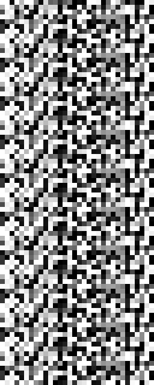
Cfg scale0 trajectory
#include <dm/dm.hpp>
int main(){std::filesystem::create_directories("build");std::filesystem::copy_file("build/diffusion-models/models/diffusion_guidance/cfg_scale0_trajectory.png","build/diffusion_guidance_cfg_scale0_trajectory.png",std::filesystem::copy_options::overwrite_existing);}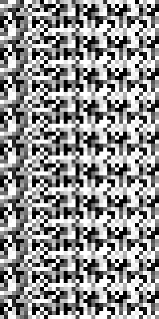
Cfg scale1
#include <dm/dm.hpp>
int main(){std::filesystem::create_directories("build");std::filesystem::copy_file("build/diffusion-models/models/diffusion_guidance/cfg_scale1.png","build/diffusion_guidance_cfg_scale1.png",std::filesystem::copy_options::overwrite_existing);}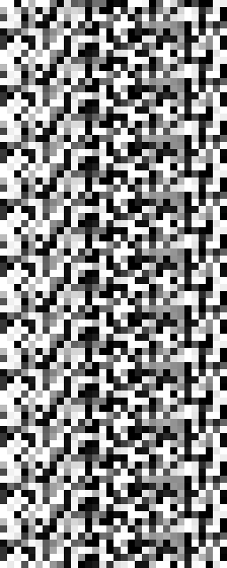
Cfg scale1 trajectory
#include <dm/dm.hpp>
int main(){std::filesystem::create_directories("build");std::filesystem::copy_file("build/diffusion-models/models/diffusion_guidance/cfg_scale1_trajectory.png","build/diffusion_guidance_cfg_scale1_trajectory.png",std::filesystem::copy_options::overwrite_existing);}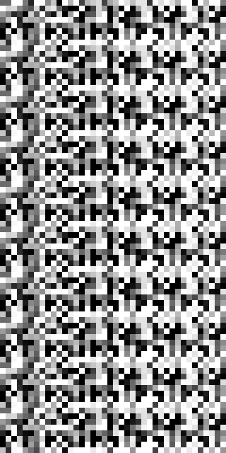
Cfg scale3
#include <dm/dm.hpp>
int main(){std::filesystem::create_directories("build");std::filesystem::copy_file("build/diffusion-models/models/diffusion_guidance/cfg_scale3.png","build/diffusion_guidance_cfg_scale3.png",std::filesystem::copy_options::overwrite_existing);}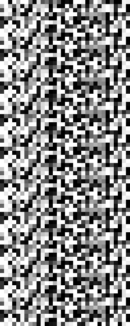
Cfg scale3 trajectory
#include <dm/dm.hpp>
int main(){std::filesystem::create_directories("build");std::filesystem::copy_file("build/diffusion-models/models/diffusion_guidance/cfg_scale3_trajectory.png","build/diffusion_guidance_cfg_scale3_trajectory.png",std::filesystem::copy_options::overwrite_existing);}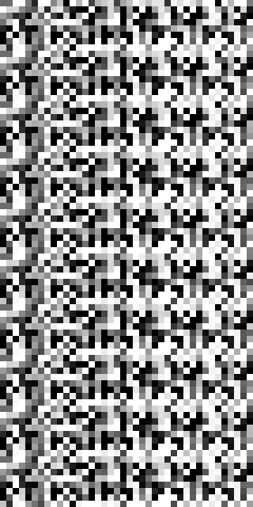
Classifier guidance scale0
#include <dm/dm.hpp>
int main(){std::filesystem::create_directories("build");std::filesystem::copy_file("build/diffusion-models/models/diffusion_guidance/classifier_guidance_scale0.png","build/diffusion_guidance_classifier_guidance_scale0.png",std::filesystem::copy_options::overwrite_existing);}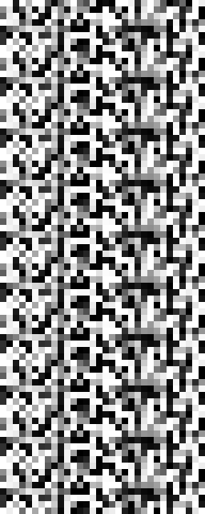
Classifier guidance scale0 trajectory
#include <dm/dm.hpp>
int main(){std::filesystem::create_directories("build");std::filesystem::copy_file("build/diffusion-models/models/diffusion_guidance/classifier_guidance_scale0_trajectory.png","build/diffusion_guidance_classifier_guidance_scale0_trajectory.png",std::filesystem::copy_options::overwrite_existing);}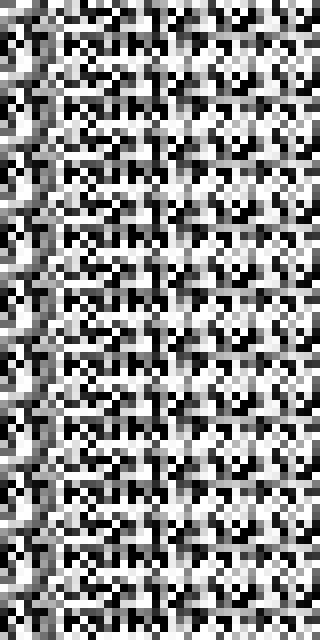
Classifier guidance scale1
#include <dm/dm.hpp>
int main(){std::filesystem::create_directories("build");std::filesystem::copy_file("build/diffusion-models/models/diffusion_guidance/classifier_guidance_scale1.png","build/diffusion_guidance_classifier_guidance_scale1.png",std::filesystem::copy_options::overwrite_existing);}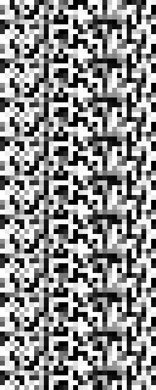
Classifier guidance scale1 trajectory
#include <dm/dm.hpp>
int main(){std::filesystem::create_directories("build");std::filesystem::copy_file("build/diffusion-models/models/diffusion_guidance/classifier_guidance_scale1_trajectory.png","build/diffusion_guidance_classifier_guidance_scale1_trajectory.png",std::filesystem::copy_options::overwrite_existing);}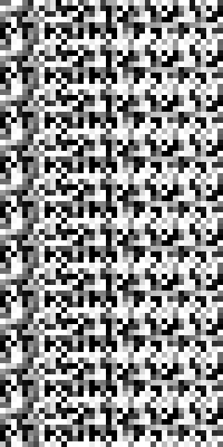
Classifier guidance scale3
#include <dm/dm.hpp>
int main(){std::filesystem::create_directories("build");std::filesystem::copy_file("build/diffusion-models/models/diffusion_guidance/classifier_guidance_scale3.png","build/diffusion_guidance_classifier_guidance_scale3.png",std::filesystem::copy_options::overwrite_existing);}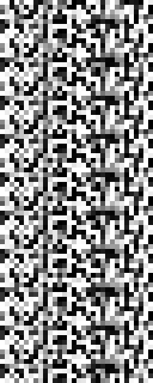
Classifier guidance scale3 trajectory
#include <dm/dm.hpp>
int main(){std::filesystem::create_directories("build");std::filesystem::copy_file("build/diffusion-models/models/diffusion_guidance/classifier_guidance_scale3_trajectory.png","build/diffusion_guidance_classifier_guidance_scale3_trajectory.png",std::filesystem::copy_options::overwrite_existing);}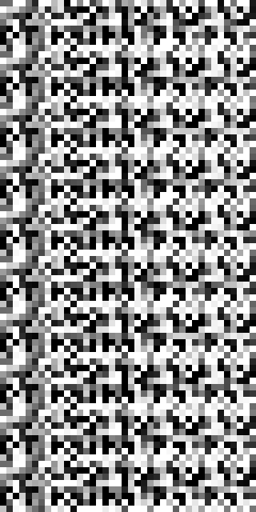
Comparison
#include <dm/dm.hpp>
int main(){std::filesystem::create_directories("build");std::filesystem::copy_file("build/diffusion-models/models/diffusion_guidance/comparison.png","build/diffusion_guidance_comparison.png",std::filesystem::copy_options::overwrite_existing);}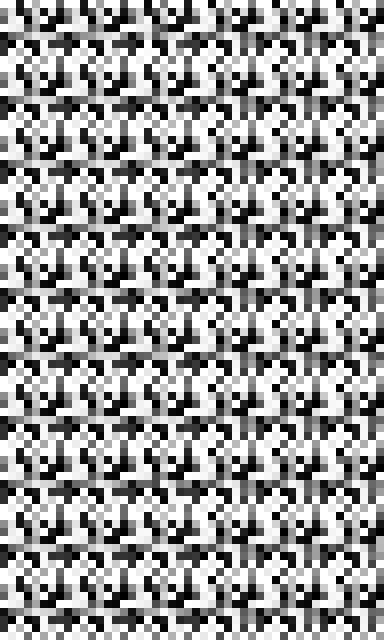
Classify the held-out noisy observations
The matrix uses all 200 test rows and their declared source noise levels, rather than generated images. Rows are true digit classes and columns are classifier predictions. These levels mix easy and heavily corrupted observations;33% accuracy must be interpreted under that exact query protocol.
#include <dm/dm.hpp>
int main(){namespace n=dm::nn;auto load=[](const std::string& file,const std::string& key){for(const auto& [name,value]:n::load_npz(file))if(name==key)return value;throw std::runtime_error("Missing classifier field "+key);};
auto logits=load("build/diffusion-models/models/diffusion_guidance/classifier/outputs.npz","prediction"),labels=load("build/diffusion-models/models/diffusion_guidance/data.npz","test_labels");
n::ConfusionMatrix matrix(10);matrix.add(labels,n::argmax(logits,1));matrix.save_svg("build/diffusion_guidance_confusion.svg",{.title="All 200 held-out noisy MNIST queries"});n::save_npz("build/diffusion_guidance_confusion.npz",{{"counts",matrix.to_tensor()}});std::cout<<"| Test rows | Accuracy |\n|---:|---:|\n|"<<labels.numel()<<"|"<<matrix.accuracy()<<"|\n";
}| Test rows | Accuracy |
|---|---|
| 200 | 0.33 |
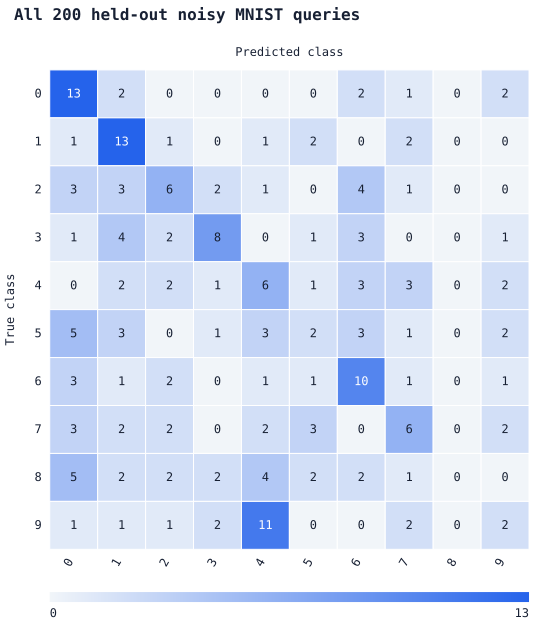
Noisy-classifier validation objective
All three recorded validation rows are shown. This figure preserves the source budget and does not select an additional checkpoint.
#include <dm/dm.hpp>
int main(){std::filesystem::create_directories("build");std::ifstream input("build/diffusion-models/models/diffusion_guidance/classifier/history.tsv");if(!input)throw std::runtime_error("Missing preserved training history");std::string line;std::getline(input,line);std::vector<double> epoch,loss;while(std::getline(input,line)){std::istringstream row(line);double x,y;if(!(row>>x>>y))throw std::runtime_error("Invalid history row");epoch.push_back(x);loss.push_back(y);}if(epoch.size()!=3)throw std::runtime_error("Source three-epoch history");
dm::graphics::RPlot::create().lines(epoch,loss,"All source validation epochs",{37,99,235}).points(epoch,loss,"Recorded values",{234,88,12},5).x_label("Epoch").y_label("Cross entropy").title("Noisy-classifier validation objective").size(900,500).save_svg("build/diffusion_guidance_classifier_history.svg");std::cout<<"| Epoch | Cross entropy |\n|---:|---:|\n";for(std::size_t i=0;i<epoch.size();++i)std::cout<<"|"<<epoch[i]<<"|"<<loss[i]<<"|\n";
}| Epoch | Cross entropy |
|---|---|
| 1 | 2.19504 |
| 2 | 1.90867 |
| 3 | 1.7864 |
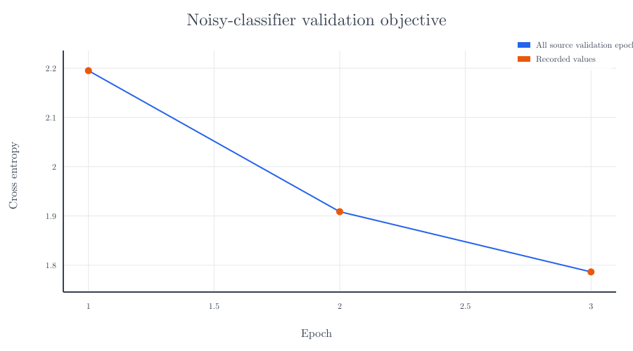
Conditional validation noise error
All three recorded validation rows are shown. This figure preserves the source budget and does not select an additional checkpoint.
#include <dm/dm.hpp>
int main(){std::filesystem::create_directories("build");std::ifstream input("build/diffusion-models/models/diffusion_guidance/conditional/history.tsv");if(!input)throw std::runtime_error("Missing preserved training history");std::string line;std::getline(input,line);std::vector<double> epoch,loss;while(std::getline(input,line)){std::istringstream row(line);double x,y;if(!(row>>x>>y))throw std::runtime_error("Invalid history row");epoch.push_back(x);loss.push_back(y);}if(epoch.size()!=3)throw std::runtime_error("Source three-epoch history");
dm::graphics::RPlot::create().lines(epoch,loss,"All source validation epochs",{37,99,235}).points(epoch,loss,"Recorded values",{234,88,12},5).x_label("Epoch").y_label("Epsilon MSE").title("Conditional validation noise error").size(900,500).save_svg("build/diffusion_guidance_conditional_history.svg");std::cout<<"| Epoch | Epsilon MSE |\n|---:|---:|\n";for(std::size_t i=0;i<epoch.size();++i)std::cout<<"|"<<epoch[i]<<"|"<<loss[i]<<"|\n";
}| Epoch | Epsilon MSE |
|---|---|
| 1 | 0.942569 |
| 2 | 0.864066 |
| 3 | 0.799921 |
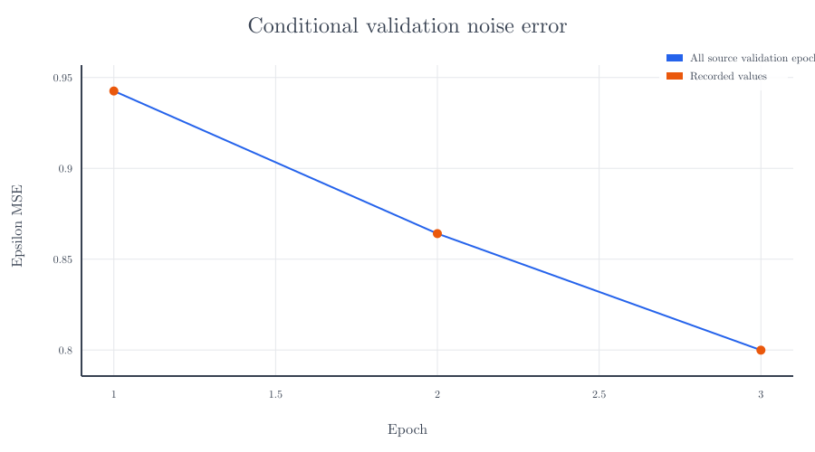
Trace the separate noisy-image classifier
The classifier consumes72 encoded state/time features and returns10 logits, with3722 values in six leaves. Target labels never enter its predictor input.
#include <dm/dm.hpp>
int main(){namespace n=dm::nn;namespace m=n::models;n::ParameterStore p(14003);m::CreateGuidance(p,true);n::Module model([&](const n::Tensor& encoded){auto o=m::DiffusionMlp(p,encoded);n::model_stage("Hidden1:32 SiLU",encoded,o.hidden1);n::model_stage("Hidden2:32 SiLU",o.hidden1,o.hidden2);return n::model_stage("Ten class logits",o.hidden2,o.value);},"Noisy classifier:3722 values / six leaves");n::ModelPlotOptions options;options.detail=n::ModelPlotDetail::Blocks;options.sizing.minimum_extent=2;options.sizing.max_planes=2;auto graph=model.plot(n::zeros({1,72}),options);if(graph.parameter_count()!=3722)throw std::runtime_error("Classifier executed census");graph.save_svg("build/diffusion_guidance_classifier_network.svg");}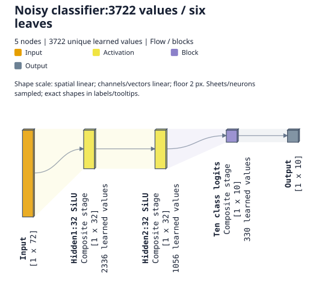